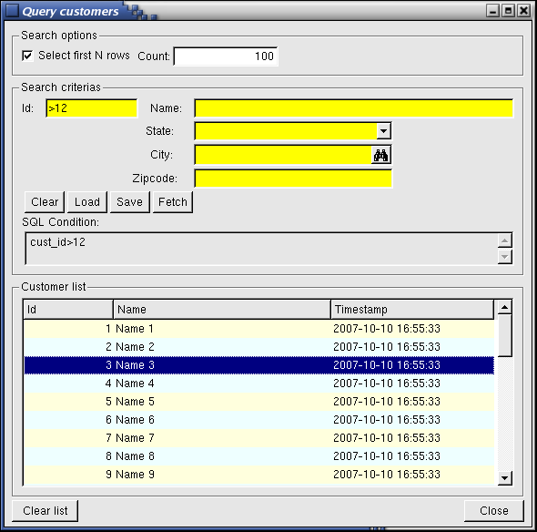

Summary:
See also: Arrays, Records, Result Sets, Programs, Windows, Forms, Display Array
The DIALOG instruction handles different parts of a form simultaneously, including simple display fields, simple input fields, read-only list of records, editable list of records, query by example fields, and action views. The DIALOG instruction acts as a collection of singular dialogs which work in parallel.
While the DIALOG instruction re-uses some of the semantics and behaviors of singular interactive instructions, there are some differences. By "singular interactive instructions", we mean the INPUT, CONSTRUCT, DISPLAY ARRAY and INPUT ARRAY instructions. The differences are discussed further within this topic.
Like the singular interactive instructions, DIALOG is an interactive instruction. You can execute a DIALOG instruction from one of the singular dialogs, or execute a singular dialog from a DIALOG block. The parent dialog will be disabled until the child dialog returns.
The DIALOG instruction binds program variables such as simple records or arrays of records with a screen-record or screen-array defined in a form, allowing the user to view and update application data.
When a DIALOG block executes, it activates the current form (the form most recently displayed or the form in the current window). When the statement completes execution, the form is de-activated.
The following screen shot is from a demo program called QueryCustomers that you can find in FGLDIR/demo/MultipleDialogs. This demo involves a DIALOG block that contains a simple INPUT block, a CONSTRUCT block, and a DISPLAY ARRAY block:

The DIALOG block is an interactive instruction that executes multiple kinds of sub-controllers simultaneously to drive different parts of a form.
DIALOG
[ ATTRIBUTE ( {
dialog-control-attribute } [,...] ) ]
{ record-input-block
| construct-block
| display-array-block
| input-array-block
}
[...]
[
{ dialog-control-block
}
[...]
]
END DIALOG
{
INPUT BY NAME { variable | record.* } [,...]
|
INPUT { variable | record.* } [,...] FROM
field-list
}
[ ATTRIBUTE ( {
input-control-attribute } [,...] ) ]
{ input-control-block
}
[...]
END INPUT
where input-control-block is one of:
{ BEFORE INPUT
| BEFORE FIELD field-spec [,...]
| ON CHANGE field-spec [,...]
| AFTER FIELD field-spec [,...]
| AFTER INPUT
| ON ACTION action-name [INFIELD
field-spec]
| ON KEY ( key-name [,...] )
}
dialog-statement
[...]
{
CONSTRUCT BY NAME
variable ON column-list
|
CONSTRUCT
variable ON column-list FROM
field-list
}
[ ATTRIBUTE ( {
construct-control-attribute } [,...] ) ]
{ construct-control-block
}
[...]
END CONSTRUCT
where construct-control-block is one of:
{ BEFORE CONSTRUCT
| BEFORE FIELD field-spec [,...]
| ON CHANGE field-spec [,...]
| AFTER FIELD field-spec [,...]
| AFTER CONSTRUCT
| ON ACTION action-name [INFIELD
field-spec]
| ON KEY ( key-name [,...] )
}
dialog-statement
[...]
DISPLAY ARRAY array TO screen-array.*
[ ATTRIBUTE ( {
display-array-control-attribute } [,...] ) ]
{ display-array-control-block
}
[...]
END DISPLAY
where display-array-control-block is one of:
{ BEFORE DISPLAY
| BEFORE ROW
| AFTER ROW
| AFTER DISPLAY
| ON ACTION action-name
| ON KEY ( key-name [,...] )
| ON FILL BUFFER
| ON EXPAND ( row-index )
| ON COLLAPSE ( row-index )
| ON DRAG_START ( dnd-object )
| ON DRAG_FINISH ( dnd-object )
| ON DRAG_ENTER ( dnd-object )
| ON DRAG_OVER ( dnd-object )
| ON DROP ( dnd-object )
}
dialog-statement
[...]
INPUT ARRAY array FROM screen-array.*
[ ATTRIBUTE ( {
input-array-control-attribute } [,...] ) ]
{ input-array-control-block
}
[...]
END INPUT
where input-array-control-block is one of:
{ BEFORE INPUT
| BEFORE ROW
| BEFORE FIELD field-spec [,...]
| ON CHANGE field-spec [,...]
| AFTER FIELD field-spec [,...]
| ON ROW CHANGE
| AFTER ROW
| BEFORE DELETE
| AFTER DELETE
| BEFORE INSERT
| AFTER INSERT
| AFTER INPUT
| ON ACTION action-name [INFIELD
field-spec]
| ON KEY ( key-name [,...] )
}
dialog-statement
[...]
where dialog-control-block is one of:
{ BEFORE DIALOG
| ON ACTION action-name
| ON KEY ( key-name [,...] )
| ON IDLE idle-seconds
| COMMAND option-name [
option-comment ] [ HELP help-number
]
| COMMAND KEY ( key-name [,...] ) option-name [
option-comment ] [ HELP help-number
]
| AFTER DIALOG
}
dialog-statement
[...]
where dialog-statement is one of:
{ statement
| ACCEPT DIALOG
| CONTINUE DIALOG
| EXIT DIALOG
| NEXT FIELD { CURRENT | NEXT | PREVIOUS | field-name
}
}
where field-list defines a list of fields with one or more of:
{ field-name
| table-name.*
| table-name.field-name
| screen-array[line].*
| screen-array[line].field-name
|
screen-record.*
|
screen-record.field-name
}
[,...]
where field-spec identifies a unique field with one of:
{ field-name
| table-name.field-name
| screen-array.field-name
|
screen-record.field-name
}
where column-list defines a list of database columns as:
{ column-name
| table-name.*
|
table-name.column-name
} [,...]
The following table shows the dialog-control-attributes supported by the DIALOG statement:
| Attribute | Description |
| FIELD ORDER FORM | Indicates that the tabbing order of fields is defined by the TABINDEX attribute of form fields. The default order in which the focus moves from field to field is determined by the order of the program variables bound to the DIALOG statement. The program options instruction can also change this behavior with FIELD ORDER FORM options. |
| UNBUFFERED [ =bool] | Indicates that the dialog must be sensitive to program variable changes. The bool parameter can be an integer literal or a program variable. |
The following table shows the input-control-attributes supported by the INPUT sub-dialog of the DIALOG statement:
| Attribute | Description |
| HELP = int-expr | Defines the help number of the help message to use when help is invoked by the user. |
| NAME = string | Identifies the sub-dialog by providing a unique name. |
| WITHOUT DEFAULTS [=bool] | Indicates whether or not INPUT fields are initially filled with the
column default values defined in the form
specification file or the database
schema files. If set to FALSE,
fields are initially populated with the column default values. If set to
TRUE, default values are ignored. bool can be an integer
literal or a program variable that
evaluates to TRUE or FALSE. For more details, see WITHOUT DEFAULTS in INPUT. |
The following table shows the display-array-control-attributes supported by the DISPLAY ARRAY sub-dialog of the DIALOG statement:
| Attribute | Description |
| COUNT = row-count | Defines the number of data rows when using a static array or the total number of rows in paged mode (can be -1 for infinite). row-count can be an integer literal or a program variable. |
| HELP = int-expr | Defines the help number of the help message to use when help is invoked by the user. |
| KEEP CURRENT ROW [=bool] | Keeps current row highlighted after execution of the instruction. |
The following table shows the input-array-control-attributes supported by the INPUT ARRAY sub-dialog of the DIALOG statement:
| Attribute | Description |
| HELP = int-expr | Defines the help number of the help message to use when help is invoked by the user. |
| WITHOUT DEFAULTS [=bool] | Indicates whether or not INPUT ARRAY rows are initially filled with
the program array elements when the dialog starts. If set to FALSE,
program array elements are ignored and the dialog will start with an
empty list. If set to
TRUE, the program array values are
used. bool can be an integer
literal or a program variable that
evaluates to TRUE or FALSE. For more details, see WITHOUT DEFAULTS in INPUT ARRAY. |
| COUNT = row-count | Defines the number of data rows in the static array. row-count can be an integer literal or a program variable. |
| MAXCOUNT = row-count | Defines the maximum number of data rows that can be entered in the program array. row-count can be an integer literal or a program variable. |
| APPEND ROW [ =bool] | Defines if the user can append new rows at the end of the list. bool can be an integer literal or a program variable that evaluates to TRUE or FALSE. |
| INSERT ROW [ =bool] | Defines if the user can insert new rows inside the list. bool can be an integer literal or a program variable that evaluates to TRUE or FALSE. |
| DELETE ROW [ =bool] | Defines if the user can delete rows. bool can be an integer literal or a program variable that evaluates to TRUE or FALSE. |
| AUTO APPEND [ =bool] | Defines if a temporary row will be created automatically when needed. bool can be an integer literal or a program variable that evaluates to TRUE or FALSE. |
| KEEP CURRENT ROW [=bool] | Keeps current row highlighted after execution of the instruction. |
The following table shows the construct-control-attributes supported by the CONSTRUCT sub-dialog of the DIALOG statement:
| Attribute | Description |
| HELP = int-expr | Defines the help number of the help message to use when help is invoked by the user. |
| NAME = string | Identifies the sub-dialog by providing a unique name. |
Use the DIALOG instruction if you want to handle different parts of a form at the same time. The DIALOG instruction acts as a combination of classical / singular dialogs. The syntax of the DIALOG instruction is very close to singular dialogs, using common triggers such as BEFORE FIELD, ON ACTION, and so on. Despite the similarities, the behavior and semantics of DIALOG are a bit different from singular dialogs.
The following example is of a DIALOG instruction that includes both an INPUT and a DISPLAY ARRAY sub-dialog:
01SCHEMA stores0203DEFINE p_customer RECORD LIKE customer.*04DEFINE p_orders DYNAMIC ARRAY OF RECORD LIKE order.*0506FUNCTION customer_dialog()0708DIALOG ATTRIBUTES(UNBUFFERED, FIELD ORDER FORM)0910INPUT BY NAME p_customer.*11AFTER FIELD cust_name12CALL setup_dialog(DIALOG)13END INPUT1415DISPLAY ARRAY p_orders TO s_orders.*16BEFORE ROW17CALL setup_dialog(DIALOG)18END DISPLAY1920ON ACTION close21EXIT DIALOG2223END DIALOG2425END FUNCTION
The main differences between multiple dialogs and singular dialogs are:
The following steps describe how to use the DIALOG statement:
A DIALOG instruction is made of one or several sub-dialogs, plus global control blocks and action handlers. The sub-dialogs bind program variables to form fields and define the type of interaction that will take place for the data model (simple input, list input or query). The sub-dialogs implement individual control blocks which let you control the behavior of the interactive instruction. Sub-dialogs can also hold action handlers, which will define local sub-dialog actions.
There are four types of DIALOG sub-dialogs:
For more details about defining sub-dialogs:
When using the INPUT sub-dialog, you bind each record member variable to the corresponding field of a screen record so the DIALOG instruction can manipulate the values that the user enters in the form fields.
The INPUT clause can be used in two forms:
The BY NAME clause implicitly binds the fields to the variables that have the same identifiers as the field names. You must first declare variables with the same names as the fields from which they accept input. The runtime system ignores any record name prefix when making the match. The unqualified names of the variables and of the fields must be unique and unambiguous within their respective domains. If they are not, the runtime system generates an exception, and sets the STATUS variable to a negative value.
01DEFINE p_cust RECORD02cust_num INTEGER,03cust_name VARCHAR(50),04cust_address VARCHAR(100)05END RECORD06...07DIALOG08INPUT BY NAME p_cust.*09BEFORE FIELD cust_name10...11END INPUT12...13END DIALOG
The FROM clause explicitly binds the fields in the screen record to a list of program variables that can be simple variables or records. The number of variables or record members must equal the number of fields listed in the FROM clause. Each variable must be of the same (or a compatible) data type as the corresponding screen field. When the user enters data, the runtime system checks the entered value against the data type of the variable, not the data type of the screen field.
01DEFINE custname VARCHAR(50)02...03DIALOG04INPUT cust_name FROM customer.cust_name05BEFORE FIELD cust_name06...07END INPUT08...09END DIALOG
The name of an INPUT sub-dialog can be used to qualify sub-dialog actions with a prefix.
In order to identify the INPUT sub-dialog with a specific name, you can use the ATTRIBUTES clause to set the NAME attribute:
01INPUT BY NAME p_cust.* ATTRIBUTES (NAME = "cust")02...
For more details about the possible attributes, see INPUT ATTRIBUTE clause.
Simple record input declared with the INPUT sub-dialog can raise the following triggers:
Note that in the singular INPUT instruction, BEFORE INPUT and AFTER INPUT blocks are typically used as initialization and finalization blocks. In an INPUT sub-dialog of a DIALOG instruction, BEFORE INPUT and AFTER INPUT blocks will be executed each time the focus goes to (BEFORE) or leaves (AFTER) the group of fields defined by this sub-dialog.
The DISPLAY ARRAY sub-dialog binds the members of the flat record (or the primitive member) of an array to the screen-array or screen-record fields specified with the TO keyword. The number of variables in each record of the program array must be the same as the number of fields in each screen record (that is, in a single row of the screen array).
You typically bind a program array to a screen-array in order to display a page of records. However, the DIALOG instruction can also bind the program array to a simple flat screen-record. In this case, only one record will be visible at a time.
The next code example defines an array with a flat record and binds it to a screen array:
01DEFINE p_items DYNAMIC ARRAY OF RECORD02item_num INTEGER,03item_name VARCHAR(50),04item_price DECIMAL(6,2)05END RECORD06...07DIALOG08DISPLAY ARRAY p_items TO sa.*09BEFORE ROW10...11END DISPLAY12...13END DIALOG
If the screen array is defined with one field only, you can bind an array defined with a primitive type:
01DEFINE p_names DYNAMIC ARRAY OF VARCHAR(50)02...03DIALOG04DISPLAY ARRAY p_names TO sa.*05BEFORE DELETE06...07END DISPLAY08...09END DIALOG
The name of the screen array specified with the TO clause identifies the list. The dialog class method such as takes the name of the screen array as the parameter, identifying the list. For example, you would use DIALOG.getCurrentRow("screen-array") to query for the current row in the list identified by 'screen-array'. The name of the screen-array is also used to qualify sub-dialog actions with a prefix.
Read-only record lists declared with the DISPLAY ARRAY sub-dialog can raise the following triggers:
Note that in the singular DISPLAY ARRAY instruction, BEFORE DISPLAY and AFTER DISPLAY blocks are typically used as initialization and finalization blocks. In a DISPLAY ARRAY sub-dialog of a DIALOG instruction, BEFORE DISPLAY and AFTER DISPLAY blocks will be executed each time the focus goes to (BEFORE) or leaves (AFTER) the group of fields defined by this sub-dialog.
The INPUT ARRAY sub-dialog binds the members of the flat record (or the primitive member) of an array to the screen-array or screen-record fields specified with the FROM keyword. The number of variables in each record of the program array must be the same as the number of fields in each screen record (that is, in a single row of the screen array).
Note that you typically bind a program array to a screen-array in order to display a page of records. However, the DIALOG instruction can also bind the program array to a simple flat screen-record. In this case, only one record will be visible at a time.
The next code example defines an array with a flat record and binds it to a screen array:
01DEFINE p_items DYNAMIC ARRAY OF RECORD02item_num INTEGER,03item_name VARCHAR(50),04item_price DECIMAL(6,2)05END RECORD06...07DIALOG08INPUT ARRAY p_items FROM sa.*09BEFORE INSERT10...11END INPUT12...13END DIALOG
If the screen array is defined with one field only, you can bind an array defined with a primitive type:
01DEFINE p_names DYNAMIC ARRAY OF VARCHAR(50)02...03DIALOG04INPUT ARRAY p_names FROM sa.*05BEFORE DELETE06...07END INPUT08...09END DIALOG
The name of the screen array specified with the FROM clause will be used to identify the list. For example, the dialog class method such as DIALOG.getCurrentRow("screen-array") takes the name of the screen array as the parameter, to identify the list you want to query for the current row. The name of the screen-array is also used to qualify sub-dialog actions with a prefix.
Editable record lists declared with the INPUT ARRAY sub-dialog can raise the following triggers:
Note that in the singular INPUT ARRAY instruction, BEFORE INPUT and AFTER INPUT blocks are typically used as initialization and finalization blocks. In the INPUT ARRAY sub-dialog of a DIALOG instruction, BEFORE INPUT and AFTER INPUT blocks will be executed each time the focus goes to (BEFORE) or leaves (AFTER) the group of fields defined by this sub-dialog.
The CONSTRUCT sub-dialog binds a character string variable with screen fields, to implement Query By Example (QBE). When such a sub-dialog is used, the DIALOG instruction produces an SQL condition corresponding to search criteria that a user specifies in the fields. The instruction fills the character variable with the SQL condition, and you can use the content of this variable to create the WHERE clause of a SELECT statement to query the database.
01DEFINE sql_condition STRING02...03DIALOG04CONSTRUCT BY NAME sql_condition ON customer.cust_name, customer.cust_address05BEFORE FIELD cust_name06...07END CONSTRUCT08...09END DIALOG
You must make sure the character string variable is large enough to store all possible SQL conditions. It is better to use a STRING data type to avoid any size problems.
The CONSTRUCT clause can be used in two forms:
The BY NAME clause implicitly binds the form fields
to the columns, where the form field identifiers match the column names
specified in the column-list after the ON
keyword. You can specify the individual column names (separated by commas) or use the tablename.* shortcut to include
all columns defined for a table in the database
schema file.
The FROM clause explicitly binds the form fields listed after the FROM keyword with the column definitions listed after the ON keyword.
In both cases, the name of the columns in column-list will be used to produce the SQL condition in string-variable.
Identifying a CONSTRUCT sub-dialog
The name of a CONSTRUCT sub-dialog can be used to qualify sub-dialog actions with a prefix. In order to identify the CONSTRUCT sub-dialog with a specific name, use the ATTRIBUTES clause to set the NAME attribute:
01CONSTRUCT BY NAME sql_condition ON customer.* ATTRIBUTES (NAME = "q_cust")02...
For more details about the possible attributes, see CONSTRUCT ATTRIBUTE clause.
A Query By Example declared with the CONSTRUCT clause can raise the following triggers:
Note that in the singular CONSTRUCT instruction, BEFORE CONSTRUCT and AFTER CONSTRUCT blocks are typically used as initialization and finalization blocks. In DIALOG instruction, BEFORE CONSTRUCT and AFTER CONSTRUCT blocks will be executed each time the focus goes to (BEFORE) or leaves (AFTER) the group of fields defined by this sub-dialog.
The following table lists all relational operators that can be used during a Query By Example input:
| Symbol | Meaning | Pattern |
| Any simple data type | ||
| = | Is Null | = |
| == | Equal to | == value |
| > | Greater than | > value |
| >= | Greater than or equal to | >= value |
| < | Less than | < value |
| <= | Less than or equal to | <= value |
| <> or != | Not equal to | != value, <> value |
| : or .. | Range | value1:value2, value1..value2 |
| | | List of values | value1 | value2 |
| Character data types only | ||
| * | Wildcard for any string | *x, x*, *x* |
| ? | Single-character wildcard | ?x, x?, ?x?, x?? |
| [c] | A set of characters | [a-z]*, [xy]? |
The following sections describe the concepts you must understand in order to program a DIALOG instruction. The following topics are covered:
By setting global parameters in FGLPROFILE, you can control the behavior of all dialogs of the program. These options are provided as global parameters to define a common pattern for all dialogs of your application. A complete description is available in the Runtime Configuration section.
List of FGLPROFILE entries affecting the behavior of dialogs:
Dialog.fieldOrder (only used by singular dialogs like INPUT)
The DIALOG instruction is a collection of sub-dialogs that act as controllers for different parts of a form. In order to program a DIALOG instruction, there must be a unique identifier for each sub-dialog. For example, to set the current row of a screen array with the setCurrentRow() method, you pass the name of the screen array to specify the sub-dialog to be affected. Sub-dialog identifiers are also used as a prefix to specify actions for the sub-dialog.
The following links describe how to specify the names of the different types of DIALOG sub-dialogs:
Sub-dialogs requiring data input (i.e. INPUT or INPUT ARRAY) need program variables to store data used during the dialog execution. When declaring the sub-dialog, you specify what program variables must be used:
01DIALOG02INPUT BY NAME custrec.* ...03...04END INPUT05...06END DIALOG
There are different manners to bind program variables to screen record fields: See sub-dialog definitions for more details.
Warning: When binding program variables with a screen record followed by a .* (dot star), keep in mind that program variables are bound to screen record fields by position, so you must make sure that the program variables are defined (or listed) in the same order as the screen array fields. This is true for INPUT, DISPLAY ARRAY and INPUT ARRAY.
The program variables can be of any data type; the runtime system will adapt input and display rules to the variable type. When the user enters data for an INPUT or INPUT ARRAY instruction, the runtime system checks the entered value against the data type of the variable, not the data type of the form field. For example, if you want to use a DATE variable, the DIALOG instruction will check for a valid date value when the user enters a value in the corresponding form field.
However, the field data types defined in the form, are used when doing a CONSTRUCT, since no program variables are used for each field during a CONSTRUCT (only one string variable is bound to that type of sub-dialog, to hold the generate SQL condition).
You typically define program variables using a LIKE clause, ensuring the form field matches the underlying database column. If a variable is declared LIKE a SERIAL/SERIAL8/BIGSERIAL column, the runtime system will treat the field as if it was defined as NOENTRY in the form file: Since values of serial columns are automatically generated by the database server, no user input is required for such fields. New generated serials are available in the SQLCA.SQLERRD[2] register for SERIAL columns, and with dbinfo('bigserial') for BIGSERIAL columns.
Some data validation rules can be defined at the form level, such as NOT NULL, REQUIRED and INCLUDE attributes. Data validation is discussed later in this documentation.
If the program record or array has the same structure as a database table (this is the case when the variable is defined with a LIKE clause), you may not want to display/use some of the columns. You can achieve this by used PHANTOM fields in the screen array definition. Phantom fields will only be used to bind program variables, and will not be transmitted to the front-end for display.
In forms, actions views like BUTTONs are bound to ON ACTION handlers by name. Within the DIALOG instruction, we distinguish dialog actions from sub-dialog actions. You can also define field-specific actions with the ON ACTION INFIELD handlers.
The next code example shows several ON ACTION definitions, at dialog, sub-dialog and field level:
01DIALOG02INPUT BY NAME ... ATTRIBUTES (NAME = "cust")03...04ON ACTION zoom INFIELD cust_city -- field-specific action "cust.cust_city.zoom"05...06ON ACTION zoom INFIELD cust_state -- field-specific action "cust.cust_state.zoom"07...08ON ACTION check -- sub-dialog action "cust.check"09...10END INPUT11DISPLAY ARRAY arr_orders TO sr_ord.*12...13ON ACTION check -- sub-dialog action "sr_ord.check"14...15END DISPLAY16BEFORE DIALOG17...18ON ACTION close -- dialog action "close"19...20END DIALOG
See also: ON ACTION handlers, and especially Binding Action Views to Action Handlers for information about this feature.
The variables act as a data model to display data or to get user input through the DIALOG instruction. Always use the variables if you want to change some field values programmatically.
When you use the default "buffered" mode, program variable changes are not automatically displayed to form fields; you need to execute DISPLAY TO or DISPLAY BY NAME. Additionally, if an action is triggered, the value of the current field is not validated and is not copied into the corresponding program variable. The only way to get the text of a field is to use GET_FLDBUF() or DIALOG.getFieldBuffer(). Note that these functions return the current text, which might not be a valid representation of a value of the field datatype.
When you use the UNBUFFERED attribute, program variables and form fields are automatically synchronized, and the instruction is sensitive to program variable changes: You don't need to display values explicitly with DISPLAY TO or DISPLAY BY NAME. When an action is triggered, the value of the current field is validated and is copied into the corresponding program variable. If you need to display new data during the DIALOG execution, just assign the values to the program variables; the runtime system will automatically display the values to the screen:
01DIALOG ATTRIBUTES(UNBUFFERED)02INPUT BY NAME p_items.*03ON CHANGE code04IF p_items.code = "A34" THEN05LET p_items.desc = "Item A34"06END IF07...08END INPUT09END DIALOG
During data input, values entered by the user in form fields are automatically validated and copied into the program variables. Actually the value entered in form fields is first available in the form field buffer. This buffer can be queried with built-in functions or dialog class methods. When you use the UNBUFFERED mode, the field buffer is used to synchronize program variables each time control returns to the runtime system - for example, when the user clicks on a button to execute an action.
When you use the UNBUFFERED mode, you may want to prevent data validation for some actions like cancel or close. To avoid field validation for a given action, you can set the validate Action Default attribute to "no", in the .4ad file or in the ACTION DEFAULTS section of the form file:
01ACTION DEFAULTS02ACTION undo (TEXT = "Undo", VALIDATE = NO)03...04END
Note that some predefined actions are already configured with validate=no in the default.4ad file.
If field validation is disabled for an action, the code executed in the ON ACTION block acts as if the dialog was in BUFFERED mode: The program variable is not set; however, the input buffer of the current field is updated. When returning from the user code, the dialog will not synchronize the form fields with program variables, and the current field will display the input buffer content. Therefore, if you change the value of the program variable during an ON ACTION block where validation is disabled, you must explicitly DISPLAY the values to the fields.
To illustrate this case, imagine that you want to implement an undo action to allow the modifications done by the user to be reverted (before these have been saved to the database of course). You typically copy the current record into a clone variable when the dialog starts, and copy these old values back to the input record when the undo action is fired. An undo action is a good candidate to avoid field validation, since you want to ignore current values. If you don't re-display the values, the input buffer of the current field will remain when returning from the ON ACTION block:
01DIALOG ATTRIBUTES(UNBUFFERED)02INPUT BY NAME p_cust.*03BEFORE INPUT04LET p_cust_copy.* = p_cust.*05ON ACTION undo -- Defined with VALIDATE=NO06LET p_cust.* = p_cust_copy.*07DISPLAY BY NAME p_cust.*08END INPUT09END DIALOG
The INPUT and INPUT ARRAY sub-dialogs support the WITHOUT DEFAULTS option in the binding clause or as an ATTRIBUTE. When used in the syntax of the binding clause, the option is defined statically at compile time as TRUE. When used as an ATTRIBUTE option, it can be specified with an integer expression that is evaluated when the DIALOG interactive instruction starts:
01INPUT BY NAME p_cust.* ATTRIBUTE (WITHOUT DEFAULTS = NOT new)03...03END INPUT
The WITHOUT DEFAULTS clause in INPUT
In the default mode, the INPUT sub-dialog clears the program variables and assigns the values defined by the DEFAULT attribute in the form file (or indirectly, the default value defined in the database schema files). This mode is typically used to input and INSERT a new record in the database. The REQUIRED field attributes are checked to make sure that the user has entered all data that is mandatory. Note that REQUIRED only forces the user to enter the field, and can leave the value NULL unless the NOT NULL attribute is used. Therefore, if you have an AFTER FIELD or ON CHANGE control block with validation rules, you can use the REQUIRED attribute to force the user to enter the field and trigger that block.
In contrast, the WITHOUT DEFAULTS option starts the dialog with the existing values of program variables. This mode is typically used in order to UPDATE an existing database row. Existing values are considered valid, thus the REQUIRED attributes are ignored when this option is used.
The WITHOUT DEFAULTS clause in INPUT ARRAY
With the INPUT ARRAY sub-dialog, the WITHOUT DEFAULT clause defines whether the program array is populated when the dialog begins. Once the dialog is started, existing rows are always handled as records to be updated in the database (i.e. WITHOUT DEFAULTS=TRUE), while newly created rows are handled as records to be inserted in the database (i.e. WITHOUT DEFAULTS=FALSE). In other words, column default values defined in the form specification file or the database schema files are only used for new created rows.
It is unusual to implement an INPUT ARRAY sub-dialog with no WITHOUT DEFAULTS option, because the data of the program variables would be cleared and the list empty. So, you typically use the WITHOUT DEFAULT clause in INPUT ARRAY. Note this is the default in INPUT ARRAY used inside DIALOG, but in singular INPUT ARRAY, the default is WITHOUT DEFAULTS=FALSE.
The form fields bound to a dialog are generally used for input or at least for display, and in this case, they are active. But in some situations, you may want to disable fields that do not require user input, and re-activate them later during the dialog execution. For example, imagine a form containing an "Industry" COMBOBOX field, with the options Healthcare, Education, Government, Manufacturing, and Other. If the user selects "Other", an secondary EDIT field should be activated automatically, to let the user input the specific description of the industry. But if one of the predefine values is selected, there is no need for the additional field, so secondary field can be left disabled.
You can achieve such behavior by enabling/disabling fields with the ui.Dialog.setFieldActive() method according to the context. The "Industry" field case described above can be implemented as follows:
01DIALOG ATTRIBUTES(UNBUFFERED)02INPUT BY NAME rec.*03ON CHANGE industry04-- A value of 99 corresponds to the "Other" item05CALL DIALOG.setFieldActive( "cust.industry", (rec.industry!=99) )06...07END INPUT08BEFORE DIALOG09CALL DIALOG.setFieldActive( "cust.industry", FALSE )10...11END DIALOG
You may consider centralizing field activation/de-activation in a single setup method, passing the DIALOG object as parameter.
You should not disable all fields of a dialog, otherwise the dialog execution stops (at least one field must get the focus during a dialog execution).
Note that it is also possible to hide fields with the ui.Form.setFieldHidden() method of the form objects. The dialog considers hidden fields as disabled (i.e. there is no need to disable fields that are already hidden). But hiding form elements changes the space used in the window layout and the form may be displayed in unexpected way, except when hiding elements in containers prepared to that, such as tables.
By default dialog actions are enabled, to let the user fire the action handler by clicking on the corresponding action view (button) or by pressing its accelerator key. In most situations actions remain active during the whole dialog execution. However, to follow GUI standards, you may want to disable some actions according to the context. For example, imagine you have an [print] action in your dialog: If no record is currently shown in the form, there is nothing to print and thus the [print] action/button should be disabled. But after a query, when the form is be filled with a given record, you want to see the [print] action active.
You can achieve such behavior by enabling/disabling actions with the ui.Dialog.setActionActive() method according to the context. The [print] action case described above can be implemented as follows:
01DIALOG ATTRIBUTES(UNBUFFERED)02...03BEFORE DIALOG04CALL DIALOG.setActionActive( "print", FALSE )05...06ON ACTION query07-- query the database and fill the record08CALL DIALOG.setActionActive( "print", row_was_found )09...10END DIALOG
You may consider centralizing action activation/de-activation in a single setup method, passing the DIALOG object as parameter.
Note that some predefined dialog actions such as INPUT ARRAY insert/append/delete actions are automatically enabled/disabled according to the context. For example, if the maximum number of rows (MAXCOUNT) is reached, insert and append are disabled.
Since several parts of a form can now be active at the same time, you may need to know which form item is current. For example, if you have several lists driven by multiple DISPLAY ARRAY sub-dialogs, you may need to know what is the current list.
To get the name of the current form item, use the DIALOG.getCurrentItem() method. This method is the new version of the former fgl_dialog_getfieldname() built-in function. It has been extended to return identifiers for fields, lists or actions identifiers.
01DIALOG ATTRIBUTES(UNBUFFERED)02DISPLAY ARRAY p_orders TO orders.*03...04END DISPLAY05DISPLAY ARRAY p_items TO items.*06...07END DISPLAY08...09IF DIALOG.getCurrentItem() == "items" THEN10...11END IF12...13END DIALOG
Note that you can also detect when you enter or leave a field or a group of fields by using control blocks such as BEFORE INPUT or AFTER DISPLAY. See Detecting focus changes for more details.
Sometimes it's needed to force the focus by program, to move or stay in a specific form element. You can do this by using the NEXT FIELD instruction. The NEXT FIELD instruction expects a form field name. When the specified field is the first column identifier of a sub-dialog driven by a DISPLAY ARRAY block, the read-only list gets the focus.
01DIALOG ATTRIBUTES(UNBUFFERED)02INPUT BY NAME p_cust ATTRIBUTES(NAME="cust")03...04END DISPLAY03DISPLAY ARRAY p_orders TO orders.*03...04END DISPLAY08ON ACTION go_to_header09NEXT FIELD cust_num10ON ACTION go_to_detail11NEXT FIELD order_lineno12...13END DIALOG
For more details, see the NEXT FIELD instruction.
Each input field has a "touched" flag: This flag is used to execute form-level validation rules and trigger ON CHANGE blocks. The flag can also be queried to detect if a field was touched/changed during the DIALOG instruction, for example with the FIELD_TOUCHED() operator or with ui.Dialog.getFieldTouched().
Both FIELD_TOUCHED() and ui.Dialog.getFieldTouched() accept a list of fields and/or the screen-record.* notation in order to check the "touched" flag of multiple fields in a unique function call. You can also pass a simple "*" star as parameter, to reference all fields used by the dialog.
The "touched" flag is set to TRUE when the user enters data in a field, or when the program executes a DISPLAY TO / DISPLAY BY NAME instruction. The flag can be set to TRUE or reset to FALSE with the ui.Dialog.setFieldTouched("field-name", value) method.
The "touched" flags of all fields are automatically reset by the interactive instruction in the following cases:
You can query the "touched" flags with the ui.Dialog.getFieldTouched() method. Note that this flag can be queried in the AFTER INPUT, AFTER CONSTRUCT, AFTER INSERT or AFTER ROW control blocks.
To emulate user input by program or to reset the "touched" flags after data was saved in the database, you might want to reset "touched" flags with a call to ui.Dialog.setFieldTouched("field-name", FALSE).
Note that when using a list driven by an INPUT ARRAY binding, a temporary row added at the end of the list will be automatically removed if none of the "touched" flags is set.
For typical EDIT fields, the "touched" flag is set when leaving the field. If you want to detect data modification earlier, you should use the dialogtouched predefined action. However, this event is only an indicator that the user started to modify a field, the value will not be available in the program variables.
Form-level validation rules can be defined for each field with form specification attributes such as NOT NULL, REQUIRED and INCLUDE. These attributes are part of the business rules of the application and must be checked before saving data into the database.
Implicit validation rule checking
The DIALOG instruction automatically executes form-level validation rules in the following cases:
Note that automatic validation occurs when the focus leaves a sub-dialog of the DIALOG instruction.
Explicit validation rule checking
The DIALOG instruction can be used as in singular interactive instructions, with the typical OK / Cancel buttons (i.e. accept / cancel actions) to finish the instruction. This lets the user input or modify one record at a time, and program flow must re-enter the DIALOG instruction to edit or create another record. To implement this, you can use the default behavior of the DIALOG instruction, and have it execute the form-level validation rules automatically when focus is lost for a sub-dialog or when leaving the dialog with ACCEPT DIALOG (raised by the OK button). However, you may want to stay in the DIALOG instruction and let the user input / modify multiple records. In this case, you need a way to execute the form-level validation rules defined for each field, before saving the data to the database. Form-level validation rules are defined by the NOT NULL, REQUIRED and INCLUDE attributes.
To validate a sub-set of fields controlled by the DIALOG instruction, use the ui.Dialog.validate("field-list") method, as shown in the following example:
01ON ACTION save02IF DIALOG.validate("cust.*") < 0 THEN03CONTINUE DIALOG04END IF05CALL customer_save()
Note that this method automatically displays an error message and registers the next field in case of error. It is mandatory to execute a CONTINUE DIALOG instruction if the function returns an error.
When a dialog is executing, the end-user can jump from field to field with the keyboard by using the tab and control-tab keys. The order in which the fields can be visited with the tab key can be controlled with a form field attribute. This feature is called "Field Tabbing Order". Note that the end user can to tab out of an INPUT ARRAY sub-dialog with control-tab and shit-control-tab accelerators (in INPUT ARRAY, tab and shift-tab loop in the fields of the current row).
The FIELD ORDER dialog attribute defines the way tabbing order works. Tabbing order can be based on the dialog binding list (FIELD ORDER CONSTRAINED, the default) or it can be based on the form tabbing order (FIELD ORDER FORM). It is recommended that you use the FIELD ORDER FORM option, to use the tabbing order specified in the form file.
The TABINDEX field attribute allows tabbing order in the form to be defined for each form item. By default, the form compiler assigns a tabbing index for each form item according to the position of the item in the layout.
Form elements that can get the focus are:
If you use the keyboard to tab in form element, the focus will go to the next (or previous) element that is visible and activated. In other words, if a form item is hidden or disabled, it is removed from the tabbing list.
Note that the tabbing position of a read-only list driven by a DISPLAY ARRAY binding is defined by the TABINDEX of the first field.
The NEXT FIELD instruction can also use the tabbing order, when executing NEXT FIELD NEXT and NEXT FIELD PREVIOUS.
If the form uses a TABLE container, the front-end resets the tab indexes when the user moves columns around. This way, the visual column order always corresponds to the input tabbing order. If the order of the columns in an editable list shouldn't be changed, you can freeze the table columns with the UNMOVABLECOLUMNS attribute.
We have seen that a DIALOG block can handle different parts of a form simultaneously. You may want to execute some code when a part of the form gets (or loses) the focus.
To detect when a group of fields, a row or a specific field gets the focus, use the following control blocks:
Note that these triggers are also executed by NEXT FIELD.
To detect when a specific field, a row or a group of fields loses the focus:
Unlike singular interactive instruction such as INPUT that are quit frequently with a cancel or accept action, the DIALOG instruction can be used continuously for several data operations, such as navigation, creation, or modification. For example, you can implement a DIALOG that is by default in navigation mode, and as soon as the user starts to modify a field, it switches to modification mode.
In such case, you typically want to get the control when the user starts to modify the current record, in order to enable a save action. To achieve this, you can use the dialogtouched predefined action. When the dialogtouched action is defined, the front-end knows that it must send the action when the end-user modifies the current field (without leaving that field), just by a simple keystroke. If you want to use this feature, just create an ON ACTION dialogtouched block as shown in the example below.
Warning: Note that you must disable / enable the dialogtouched action in accordance with the status of the dialog: If this action is enabled, the ON ACTION block will be fired each time the user types characters (or modifies the value with copy/paste) in the current field; This can generate a lot of network traffic.
The typical programming pattern is to detect when the data is being modified with an ON ACTION dialogtouched block, enable dialog actions like save according to the new status (editing mode), disable the dialogtouched action, let the user modify other fields and after the save action was executed and data changes have been successfully committed in the database, return to the navigation mode by disabling actions like save and enabling dialogtouched back:
01DIALOG02...03ON ACTION dialogtouched04CALL setup_dialog(DIALOG,TRUE)05...06ON ACTION save07CALL save_record()08CALL setup_dialog(DIALOG,FALSE)09...10END DIALOG1112FUNCTION setup_dialog(d,e)13DEFINE d ui.Dialog, e BOOLEAN14LET editing = e15CALL DIALOG.setActionActive("dialogtouched", NOT editing)16CALL DIALOG.setActionActive("save", editing)17CALL DIALOG.setActionActive("query", NOT editing)18END FUNCTION
Before dynamic arrays, the language only supported static
arrays, and you had to specify the number of rows the DISPLAY ARRAY and INPUT
ARRAY interactive instructions must handle. When using a static array, you
must specify the actual number of rows with the SET_COUNT()
built-in function or with the COUNT
attribute. Both of them are only taken into account when the
interactive instruction starts. Further, when using multiple lists in DIALOG,
the SET_COUNT() built-in function is unusable, as it defines the
total number of rows for all lists. Thus, the only way to define the number of
rows when using a static array in multiple dialogs is to use the COUNT
attribute. Remember the COUNT attribute is only taken into account when
the dialog starts.
Even if DIALOG is able to handle static arrays, it is strongly recommended that you use dynamic arrays in DISPLAY ARRAY or INPUT ARRAY sub-dialogs. When using a dynamic array, the total number of rows is automatically defined by the array variable (i.e. by array.getLength()). Note that special consideration has to be taken when using the paged mode. In this mode the dynamic array only holds a page of the row set: You must specify the total number of rows with the ui.Dialog.setArrayLength() method.
See Example 1 for dynamic array usage with DIALOG.
When implementing a read-only list with a DISPLAY ARRAY sub-dialog, it is possible to use the paged mode by using the ON FILL BUFFER block. The paged mode allows the program to display a very large number of rows without copying all database rows into the program array. Lists are actually displayed by pages; the DIALOG instruction executes the instructions in the ON FILL BUFFER block when it needs a given page of rows. You must use a dynamic array to implement a paged list.
In paged mode, the dynamic array holds a page of rows, not all rows of the
result set. Therefore, you must specify the total number of rows with the COUNT
attribute in the ATTRIBUTES clause of DISPLAY ARRAY. The
number of rows can be changed during dialog execution with the ui.Dialog.setArrayLength()
method. Note that in singular DISPLAY
ARRAY instructions, you define the total number of rows of a paged mode
with the SET_COUNT()
built-in function or the COUNT
attribute. But these are only taken into account when the dialog starts. If
the total number of rows changes during the execution of the dialog, the only
way to specify the number of rows is setArrayLength().
The ON FILL BUFFER clause is used to fill a page of rows in the dynamic array, according to an offset and a number of rows. The offset can be retrieved with the FGL_DIALOG_GETBUFFERSTART() built-in function, and the number of rows to provide is defined by the FGL_DIALOG_GETBUFFERLENGTH() built-in function.
You can start the dialog with an undefined number of rows by specifying -1. The dialog will continue to ask for rows with ON FILL BUFFER, until you provide less rows as expected for the page, or if you reset the total number of rows to a value higher value as -1 with ui.Dialog.setArrayLength(). However, with an undefined number of rows, the dialog cannot support multi-row selection.
It is not possible to use treeview decoration when the dialog uses the paged mode with ON FILL BUFFER: The dialog needs the complete set of open nodes with parent/child relations to handle the treeview display. With the paged mode only a short window of the dataset is known by the dialog. If you use a treeview with a paged mode DISPLAY ARRAY, the program will raise an error at runtime.
A typical paged DISPLAY ARRAY implementation consists of a scroll cursor providing the list of records to be displayed. Scroll cursors use a static result set. If you want to display fresh data, you can implement an advanced paged mode by using a scroll cursor that provides the primary keys of the referenced result set, plus a prepared cursor to fetch rows on demand in the ON FILL BUFFER clause. In this case you may need to check whether a row still exists when fetching a record with the second cursor.
The following example shows a DISPLAY ARRAY implementation using a scroll cursor to fill pages of records in ON FILL BUFFER, specifying an undefined number of rows (COUNT=-1).
01MAIN02DEFINE arr DYNAMIC ARRAY OF RECORD03id INTEGER,04fname CHAR(30),05lname CHAR(30)06END RECORD07DEFINE cnt, ofs, len, row, i INTEGER08DATABASE stores709OPEN FORM f1 FROM "custlist"10DISPLAY FORM f111DECLARE c1 SCROLL CURSOR FOR12SELECT customer_num, fname, lname FROM customer13OPEN c114DIALOG ATTRIBUTES(UNBUFFERED)15DISPLAY ARRAY arr TO sa.* ATTRIBUTES(COUNT=-1)16ON FILL BUFFER17CALL arr.clear()18LET ofs = fgl_dialog_getBufferStart()19LET len = fgl_dialog_getBufferLength()20LET row = ofs21FOR i=1 TO len22FETCH ABSOLUTE row c1 INTO arr[i].*23IF SQLCA.SQLCODE!=0 THEN24CALL DIALOG.setArrayLength("sa",row-1)25EXIT FOR26END IF27LET row = row + 128END FOR29END DISPLAY30ON ACTION ten_first_rows_only31CALL DIALOG.setArrayLength("sa", 10)32ON ACTION quit33EXIT DIALOG34END DIALOG35END MAIN
When a DISPLAY ARRAY or INPUT ARRAY dialog (or sub-dialog) is combined with a TABLE container, the row sorting feature is available implicitly. Row sorting is also supported on TREE containers, but only with DISPLAY ARRAY dialogs.
To sort rows in a list, the end user must click on a column header of the table. Clicking on a table column header triggers a GUI event that instructs the runtime system to re-order the rows displayed in the list container.
In fact, the rows are only sorted from a visual point of view; the data rows in the program array (the model) are left untouched. Therefore, when rows are sorted, the visual position of the current row might be different from the current row index in the program array.
To sort rows, the runtime system uses the standard collation order of the system, following the current locale settings. As result, the rows might be ordered a bit differently than when using the database server to sort rows (with an ORDER BY clause of the SELECT statement), since database servers can define their own collation sequences to sort character data.
The sorting feature is disabled when using the paged mode of DISPLAY ARRAY, because not all result set rows are known by the runtime system in this mode.
When an application window is closed, the selected sort column and order is stored by the front-end in the user settings database of the system (for example, on Windows platforms it's the registry database). The sort will be automatically re-applied the next time the window is created. This way, the rows will appear sorted when the program restarts. The saved sort column and order is specific to each list container.
The built-in sort is enabled by default. To prevent sorting in a TABLE or TREE, you must use the UNSORTABLECOLUNMS attribute at the list container level, or set the UNSORTABLE attribute at the column/field level. You may want to use the UNSORTABLECOLUMNS attribute for tables controlled by INPUT ARRAY.
It is possible to implement a tree-view controller with a DISPLAY ARRAY sub-dialog inside a DIALOG instruction. The tree node structure is defined by the program array rows, and the form must define a TREE container.
See the Tree Views page for more details.
To set the current row in a list driven by a DISPLAY ARRAY or INPUT ARRAY sub-dialog, use the ui.Dialog.setCurrentRow("screen-array", pos) method:
01DIALOG ATTRIBUTES(UNBUFFERED)02DISPLAY ARRAY p_items TO sa.*03...04ON ACTION move_to_x05LET row = askForNewRow()06CALL DIALOG.setCurrentRow("sa", row)07NEXT FIELD item_num08...09END DIALOG
Calling the setCurrentRow() method will not execute
control blocks such as BEFORE ROW and AFTER ROW, and will not
set the focus. If you want to set the focus to the list, you must use the
NEXT FIELD instruction (this works with DISPLAY ARRAY as well
as with INPUT ARRAY).
The method to query the current row of a list is ui.Dialog.getCurrentRow("screen-array").
The singular-dialog specific functions FGL_SET_ARR_CURR(),
ARR_CURR() and ARR_COUNT()
are also supported. These functions work in the context of the current list
having the focus. Note however that FGL_SET_ARR_CURR() triggers
control blocks such as BEFORE ROW, while ui.Dialog.setCurrentRow()
does not trigger any control block.
You can implement an editable record list by using an INPUT ARRAY sub-dialog. This controller allows the user to directly edit existing rows and to create or remove rows with implicit actions.
New rows can be created with append or insert actions, and can be removed with the delete action. These three implicit actions are automatically created by the DIALOG instruction (you do not write ON ACTION blocks for these actions):
The insert action will insert a new row before the current row. If there are no rows in the list, insert adds a new row.
The append action creates a new row after the last row of the list.
The delete action deletes the current row.
Each of the implicit actions can be prevented by setting the APPEND ROW, INSERT ROW and/or DELETE ROW control attributes to FALSE, and if you want to fully deny row addition, you might also want to set the AUTO APPEND attribute to FALSE:
01DIALOG ATTRIBUTES(UNBUFFERED)02INPUT ARRAY p_items FROM sa.* ATTRIBUTES(APPEND ROW=FALSE, AUTO APPEND=FALSE, INSERT ROW=FALSE, DELETE ROW=FALSE)03...04END INPUT05END DIALOG
Specific control blocks (predefined triggers) are available to take control when a row is deleted or created:
The dynamic arrays and the ui.Dialog
class provide methods such as array.deleteElement() or ui.Dialog.appendRow()
to modify the list. When using these methods, the predefined triggers described above are not executed.
While it is safe to use these methods within a DISPLAY ARRAY, you must
take care when using an INPUT ARRAY. For example, you should not
call such methods in triggers like BEFORE ROW,
AFTER INSERT, BEFORE
DELETE.
Users can append temporary rows by moving to the end of the list or by executing the append action. Appending temporary rows is a bit different from doing an insert action, because the row is considered temporary until the user modifies a field; inserted rows are not temporary, they are permanent. For more details, see Temporary rows below.
Note that by default (i.e. AUTO APPEND is not defined as FALSE), when the last row is removed by a delete action, the interactive instruction will automatically create a new temporary row at the same position. The visual effect of this behavior can be misinterpreted - if no data was entered in the last row, you can't see any difference. However, the last row is really deleted and a new row is created, and the BEFORE DELETE / AFTER DELETE / AFTER ROW / BEFORE ROW / BEFORE INSERT control block sequence is executed.
The insert, append or delete actions might be automatically disabled according to the context: If the INPUT ARRAY is using a static array that is full, or if the MAXCOUNT attribute is reached, both insert and append actions will be disabled. The delete action is automatically disabled if AUTO APPEND = FALSE and there are no more rows in the array.
If a list is driven by an INPUT ARRAY sub-dialog, the user can create a new temporary row at the end of the list. The new row is called "temporary" because it will be automatically removed if the user leaves the row without entering data. If data is entered by the user or by program (setting the touched flag), the temporary row becomes permanent.
Temporary to permanent row creation is achieved under certain conditions described below. You must also distinguish explicit temporary row creation from automatic temporary row creation.
Note that temporary row creation is different from adding new rows with the ui.Dialog.appendRow() method; in that case, the row is considered permanent and remains in the list even if the user did not enter data in fields.
The temporary row is made permanent (i.e. kept in the list), when moving down to the next new temporary row, or if the 'touched' flag of one of the fields is set. The 'touched' flag of a field is typically set when the user enters data in the form field and tabs to another field (or validates the dialog), but this modification flag can also be set by program, with a DISPLAY TO / BY NAME instruction or with the ui.Dialog.setFieldTouched() method. When the 'touched flag' is set by program, NOENTRY fields are ignored, however, fields dynamically disabled by ui.Dialog.setFieldActive() are taken into account. See 'touched' flag for more details.
Explicit temporary row creation takes place when the user decided to append a new row. The following user actions will trigger a temporary row creation (as long as the APPEND ROW attribute is TRUE - the default):
By default, to follow the traditional behavior of singular INPUT ARRAY instructions, automatic temporary row creation takes place when:
Temporary row creation is useful because, in most cases, INPUT ARRAY is used to edit existing rows and append new rows at the end of the list. However, you might want to deny row addition or at least avoid the automatic temporary row creation when the last row is deleted or when an empty list gets the focus.
To avoid explicit temporary row creation (i.e. remove the default append action), set the APPEND ROW attribute to FALSE in the ATTRIBUTE clause of the INPUT ARRAY sub-dialog:
01DIALOG ATTRIBUTES(UNBUFFERED)02INPUT ARRAY p_items FROM sa.* ATTRIBUTES(APPEND ROW=FALSE)03...04END INPUT05END DIALOG
Even if APPEND ROW / INSERT ROW attributes are set to FALSE, automatic temporary row can occur when the user deletes the last row of the list or if the list is empty and gets the focus. This is the traditional behavior, like in singular INPUT ARRAY instructions. Without automatic temporary row creation, a singular INPUT ARRAY instruction would have no rows to edit if the dialog is started with an empty array. However, with multiple dialogs, it is common that an editable list controlled by an INPUT ARRAY sub-dialog can be empty and get the focus (for example, in a master/detail form with order header and order lines, when creating a new order, it has no lines). By default, when the focus goes to an INPUT ARRAY sub-dialog, it will behave as the singular INPUT ARRAY (i.e. create an automatic temporary row if the list is empty). If needed, you can avoid automatic temporary row creation by setting the AUTO APPEND attribute to FALSE:
01DIALOG ATTRIBUTES(UNBUFFERED)02INPUT ARRAY p_items FROM sa.* ATTRIBUTES(AUTO APPEND=FALSE)03...04END INPUT05END DIALOG
Therefore, to fully deny row addition, you must set both APPEND ROW and AUTO APPEND to FALSE.
Note that if both APPEND ROW and INSERT ROW attributes are set to FALSE, the dialog will deny explicit temporary row creation but also automatic temporary row creation, as if AUTO APPEND = FALSE would be used.
In order to control row creation, the DIALOG instruction provides the BEFORE INSERT and AFTER INSERT control blocks. The BEFORE INSERT trigger is fired after a new row was inserted or appended, just before the user gets control to enter data in fields. Concerning temporary rows, the AFTER INSERT block is fired if data has been entered and you leave the new row (for example, when the focus moves to another row or leaves the current list), or if the dialog is validated with ACCEPT DIALOG. No AFTER INSERT block is fired if the user did not enter data: The temporary row is automatically deleted.
In the BEFORE INSERT control block, you can tell if a row is a temporary appended one by comparing the current row (DIALOG.getCurrentRow() or ARR_CURR()) with the total number of rows (DIALOG.getArrayLength() or ARR_COUNT()). If current row equals the row count, then you are in a temporary row.
See also BEFORE INSERT and AFTER INSERT for more details.
When a temporary row as automatically removed, the AFTER ROW block will be executed for the temporary row, but ui.Dialog.getCurrentRow() / ARR_CURR() will be one row greater as ui.Dialog.getArrayLength() / ARR_COUNT(). In this case, you should ignore the AFTER ROW event.
See AFTER ROW for more details.
The close action is a predefined action used for the X cross button in the upper-right corner of graphical windows. Unlike singular interactive instructions, the DIALOG instruction does not create an implicit close action.
By default, the DIALOG instruction maps the close action to the ON ACTION cancel block, if such a block is defined. If an ON ACTION close block is defined, it is executed instead of the ON ACTION cancel block. This behavior is implemented to execute the cancel code automatically when the user closes the graphical window.
Note that the default action view of the close action is hidden.
For more details, read Windows closed by the user.
When using the DISPLAY ARRAY or INPUT ARRAY sub-dialogs, you can assign specific colors to cells of a Table or ScrollGrid with the DIALOG.setArrayAttributes() method. See method description for more details.
Note however that it's recommended to be in UNBUFFERED mode to get a front-end synchronization when changing cell attributes.
The DISPLAY ARRAY sub-dialog now allows multi-row selection. By default, the list permits single-row selection. if you want multi-row selection, use the DIALOG.setSelectionMode() method.
When you use multi-row selection, you must distinguish between two concepts: row selection and current row. In GUI mode, a selected row usually has a blue background, while the current row has a dotted focus rectangle. The current row may not be selected, or a selected row may not be the current row. Selection flags can be queried with the DIALOG.isRowSelected() method. To change the selection flags for a range of rows, use the DIALOG.setSelectionRange().
When the default single-row selection is used, the current row is always selected automatically.
The DISPLAY ARRAY dialog implements an implicit row-copy feature: The selected rows can be dragged to another dialog or external program, or the end-user can do an editcopy predefined action (control-c shortcut), to copy the selected rows to the front-end clipboard. Note that the row-copy feature works also when multi-row selection is disabled, but only the current row will be dragged or copied to the front-end clipboard.
Warnings:
Multi-row selection is GUI-specific and therefore can't be used in TUI mode.
It is mandatory to specify the UNBUFFERED attribute for the DIALOG or DISPLAY ARRAY instruction, otherwise if selection flags are changed by program, the front-end will not be automatically synchronized.
If you delete, insert or append rows in the program array with methods such as array.deleteElement(), selection information is not synchronized: You must use dialog methods, like DIALOG.insertRow() (or DIALOG.insertNode() for tree-views), to sync the selection flags with the data rows.
Multi-row Selection ergonomics and keyboard shortcuts
Concerning rendering and ergonomics, Genero follows the common GUI standards defined by the major system vendors. The following keyboard and mouse combinations can be used to select or de-select rows in a list; this may vary according to the front-end type:
| Key/Mouse combination | Description of the result |
| control + click | Toggles selection on the clicked row: - On a non-selected row, adds the clicked row to the selection. - On a selected row, de-selects the clicked row. |
| shift + click | Selects a group of rows: Rows that were already selected are de-selected. All rows from the last control + click row to the current clicked row will be selected. |
| control + shift + click | Extends the selection to the clicked row and keeps previous selections. All rows from the current row through the clicked row will be selected. |
| control-A | Selects all rows. |
| control-navikey | Moves to the new row without changing existing selections. See (1) for possible navigation keys. |
| shift-navikey | Moves to and selects new rows from
the current row to the destination, and cleans older selections. - When you move away from the original selected row, you extend the selected rows. - When you move back to the original selected row, you reduce the selected rows. See (1) for possible navigation keys. |
| control-shift-navikey | Moves to and selects new rows from the current row to the destination, and keeps
older selections. See (1) for possible navigation keys. |
| spacebar | Selects the current row (current row must be de-selected). |
| control-spacebar | Toggles selection for current row. |
Behavior of ui.Dialog class methods with multi-row selection
The table below describes the effect of ui.Dialog class methods on selection flags when multi-range selection is enabled:
| Dialog class method | Effect on multi-row selection |
| appendRow() | Selection flags of existing rows are unchanged. New row is appended at the end of the list with selection flag set to zero. |
| appendNode() | Selection flags of existing rows are unchanged. New node is appended at the end of the tree with selection flag set to zero. |
| deleteAllRows() | Selection flags of all rows are cleared. |
| deleteRow() | Selection flags of existing rows are unchanged. Selection information is synchronized (i.e., shifted up) for all rows after the deleted row. |
| deleteNode() | Selection flags of existing rows are unchanged. Selection information is synchronized (i.e., shifted up) for all nodes after the deleted node. |
| insertRow() | Selection flags of existing rows are unchanged. Selection information is synchronized (i.e., shifted down) for all rows after the new inserted row. |
| insertNode() | Selection flags of existing rows are unchanged. Selection information is synchronized (i.e., shifted down) for all nodes after the new inserted node. |
| setArrayLength() | Selection flags of existing rows are unchanged. If the new array length is larger than the previous length, selection flags of new rows are not initialized to zero. |
| setCurrentRow() | Selection flags of all rows are reset, and the new current row gets selected. |
| setSelectionMode() | When you switch off multi-row selection, the selection flags of existing rows are cleared. |
The DISPLAY ARRAY sub-dialog now supports Drag & Drop. This feature is enabled by using ON DRAG* and ON DROP interaction blocks.
For more details, read the Drag & Drop page.
This sections describes the ATTRIBUTES clause attributes that can be used to configure a DIALOG instruction and its sub-dialogs:
The ATTRIBUTES clause specifications override all default attributes and temporarily override any display attributes that the OPTIONS or the OPEN WINDOW statement specified for these fields.
By default, the form tabbing order is defined by the variable list in the binding specification. You can control the tabbing order by using the FIELD ORDER FORM attribute; when this attribute is used, the tabbing order is defined by the TABINDEX attribute of the form items.
The field order mode can also be specified globally with the OPTIONS FIELD ORDER instruction.
With FIELD ORDER FORM, if the user changes the focus from field A to a distant field X with the mouse, the dialog does not execute the BEFORE FIELD / AFTER FIELD triggers of intermediate fields which appear in the binding specification between field A and field X. If the default FIELD ORDER CONSTRAINT mode is used, all intermediate triggers are executed unless you set the Dialog.fieldOrder FGLPROFILE entry to false (this entry is actually ignored when using FIELD ORDER FORM).
See also Handling the Tabbing Order.
The UNBUFFERED attribute indicates that the dialog must be sensitive to program variable changes. When using this option, you bypass the compatible "buffered" mode.
Note that the "unbuffered" mode can be set globally for all DIALOG instructions with a ui.Dialog class method:
01CALL ui.Dialog.setDefaultUnbuffered(TRUE)02DIALOG -- Will work in UNBUFFERED mode03...04END DIALOG
See also Buffered and Unbuffered mode.
The NAME attribute can be used to identify the INPUT sub-dialog, especially useful to qualify sub-dialog actions.
The HELP attribute defines the help number of the text to be displayed when invoked and focus is in one of the fields controlled by the INPUT sub-dialog.
By default, sub-dialogs use the default values defined in the form files. If you want to use the values stored in the program variables bound to the dialog, you must use the WITHOUT DEFAULTS attribute. For more details see WITHOUT DEFAULTS option.
The HELP attribute defines the help number of the text to be displayed when invoked and focus is in the list controlled by the DISPLAY ARRAY sub-dialog.
The COUNT attribute defines the number of valid rows in the static array to be displayed as default rows. If you do not use the COUNT attribute, the runtime system cannot determine how much data to display, so the screen array remains empty. The COUNT option is ignored when using a dynamic array, unless page mode is used. In this case, the COUNT attribute must be used to define the total number of rows, because the dynamic array will only hold a page of the entire row set. If the value of COUNT is negative or zero, it defines an empty list.
INPUT ARRAY specific attributes can be defined in the ATTRIBUTE clause of the sub-dialog header:
The APPEND ROW attribute can be set to FALSE to avoid the creation of the append default action, and prevent the user from adding rows at the end of the list. However, even if APPEND ROW = FALSE, the user can still insert rows in the middle of the list. Use the INSERT ROW attribute to prevent the user from inserting rows. Additionally, even with APPEND ROW = FALSE, you can still get automatic temporary row creation if AUTO APPEND is not set to FALSE.
The INSERT ROW attribute can be set to FALSE to avoid the insert default action, and prevent the user from inserting new rows in the middle of the list. However, even if INSERT ROW = FALSE , the user can still append rows at the end of the list. Use the APPEND ROW attribute to prevent the user from appending rows. Additionally, even with APPEND ROW = FALSE, you can still get implicit temporary row creation if AUTO APPEND is not set to FALSE.
When the DELETE ROW attribute is set to FALSE, the default delete action is not created, so the user cannot delete rows from the list. It is possible, however, to create new rows, unless the INSERT ROW and APPEND ROW attributes are set to FALSE as well.
By default, an INPUT ARRAY controller creates a temporary row when needed. For example, when the user deletes the last row of the list, an new row will be automatically created. You can prevent this default behavior by setting the AUTO APPEND attribute to FALSE. When this attribute is set to FALSE, the only way to create a new temporary row is to execute the append action.
Warning: If both the APPEND ROW and INSERT ROW attributes are set to FALSE, the dialog automatically behaves as if AUTO APPEND equals FALSE.
The COUNT attribute defines the number of valid rows in the static array to be displayed as default rows. If you do not use the COUNT attribute, the runtime system cannot determine how much data to display, so the screen array remains empty. The COUNT option is ignored when using a dynamic array. If you specify the COUNT attribute, the WITHOUT DEFAULTS option is not required because it is implicit. If the COUNT attribute is greater than MAXCOUNT, the runtime system will take MAXCOUNT as the actual number of rows. If the value of COUNT is negative or zero, it defines an empty list.
The MAXCOUNT attribute defines the maximum number of rows that can be inserted in the program array. This attribute allows you to give an upper limit of the total number of rows the user can enter, when using both static or dynamic arrays.
When binding a static array, MAXCOUNT is used as upper limit if it is lower or equal to the actual declared static array size. If MAXCOUNT is greater than the array size, the size of the static array is used as the upper limit. If MAXCOUNT is lower than the COUNT attribute (or to the SET_COUNT() parameter when using a singular INPUT ARRAY), the actual number of rows in the array will be reduced to MAXCOUNT.
When binding a dynamic array, the user can enter an infinite number of rows unless the MAXCOUNT attribute is used. If MAXCOUNT is lower than the actual size of the dynamic array, the number of rows in the array will be reduced to MAXCOUNT.
If MAXCOUNT is negative or equal to zero, the user cannot insert rows.
The HELP attribute defines the help number of the text to be displayed when invoked and focus is in the list controlled by the INPUT ARRAY sub-dialog.
The current row of a list is highlighted during the execution of the dialog, and cleared when the DIALOG instruction ends. You can change this default behavior by using the KEEP CURRENT ROW attribute, to force the runtime system to keep the current row highlighted.
You typically use the INPUT ARRAY sub-dialog with the WITHOUT DEFAULTS attribute. If this attribute is not set when using an INPUT ARRAY sub-dialog, the list is empty even if the array holds data. For more details see WITHOUT DEFAULTS option.
The NAME attribute can be used to identify the CONSTRUCT sub-dialog; this is especially useful to qualify sub-dialog actions.
The HELP attribute defines the help number of the text to be displayed when invoked and focus is in one of the fields controlled by the CONSTRUCT sub-dialog.
According to the sub-dialogs defined in the DIALOG instruction, the runtime system creates a set of default actions. These actions are provided to ease the implementation of the controller. For example, when using an INPUT ARRAY sub-dialog, the dialog instruction will automatically create the insert, append and delete default actions.
The following table lists the default actions created for the DIALOG interactive instruction, according to the sub-dialogs defined:
| Default action | Control Block execution order |
| help | Shows the help topic defined by the HELP clause. Only created when a HELP clause or option is defined for the sub-dialog. |
| insert | Inserts a new row before current row. Only created if INPUT ARRAY is used; action creation can be avoided with INSERT ROW = FALSE attribute. |
| append | Appends a new row at the end of the list. Only created if INPUT ARRAY is used; action creation can be avoided with APPEND ROW = FALSE attribute. |
| delete | Deletes the current row. Only created if INPUT ARRAY is used; action creation can be avoided with DELETE ROW = FALSE attribute. |
| nextrow | Moves to the next row in a list displayed in one row of fields. Only created if DISPLAY ARRAY or INPUT ARRAY used with a screen record having only one row. |
| prevrow | Moves to the previous row in a list displayed in one row of fields. Only created if DISPLAY ARRAY or INPUT ARRAY used with a screen record having only one row. |
| firstrow | Moves to the first row in a list displayed in one row of fields. Only created if DISPLAY ARRAY or INPUT ARRAY used with a screen record having only one row. |
| lastrow | Moves to the last row in a list displayed in one row of fields. Only created if DISPLAY ARRAY or INPUT ARRAY used with a screen record having only one row. |
The insert, append and delete default actions can be avoided with dialog control attributes:
01INPUT ARRAY arr TO sr.* ATTRIBUTE( INSERT ROW=FALSE, APPEND ROW=FALSE, ... )02...
Data blocks are dialog triggers which are fired when the dialog controller needs data to feed the view with values. Such blocks are typically used when record list data is provided dynamically, with the paged mode of when implementing dynamic tree-views.
Control blocks are predefined triggers where you can implement specific code to control the interactive instruction, by using ui.Dialog class methods or dialog specific instructions such as NEXT FIELD or CONTINUE DIALOG.
The BEFORE DIALOG block is executed one time as the first trigger when the DIALOG instruction is starts, before the runtime system gives control to the user. You can implement variable initialization and dialog configuration in this block.
In the following example, the BEFORE DIALOG block performs some dialog setup and gives the focus to a specific field:
01BEFORE DIALOG02CALL DIALOG.setActionActive("save",FALSE)03CALL DIALOG.setFieldActive("cust_status", is_admin())04IF cust_is_new() THEN05NEXT FIELD cust_name06END IF
A DIALOG instruction can include no more than one BEFORE DIALOG control block.
The AFTER DIALOG block is executed one time as the last trigger when the DIALOG instruction terminates, typically after the user has validated or canceled the dialog, and before the runtime system executes the instruction that appears just after the END DIALOG keywords. You typically implement dialog finalization in this block.
The dialog terminates when an ACCEPT DIALOG or EXIT DIALOG control instruction is executed. However, the AFTER DIALOG block is not executed if an EXIT DIALOG is performed.
If you execute one of the following control instructions in an AFTER DIALOG block, the dialog will not terminate and it will give control back to the user:
In the next example, the AFTER DIALOG block checks whether a field value is correct and gives control back to the dialog if the value is wrong:
01AFTER DIALOG02IF NOT cust_is_valid_status(p_cust.cust_status) THEN03ERROR "Customer state is not valid"04NEXT FIELD cust_status05END IF
In parts of a dialog driven by a simple INPUT or by a CONSTRUCT sub-dialog, the BEFORE FIELD block is executed every time the cursor enters into the specified field. For editable lists driven by INPUT ARRAY, this block is executed when moving the focus from field to field in the same row, or when moving to another row in the same column. The BEFORE FIELD block is also executed when using NEXT FIELD.
The BEFORE FIELD keywords must be followed by a list of form field specification. The screen-record name can be omitted.
BEFORE FIELD is executed after BEFORE INPUT, BEFORE CONSTRUCT, BEFORE ROW and BEFORE INSERT. For more details, see Control Block Execution Order.
You typically do some field value initialization or message display in a BEFORE FIELD block:
01BEFORE FIELD cust_status02LET p_cust.cust_comment = NULL03MESSAGE "Enter customer status"
Note that the BEFORE FIELD block is also executed when NEXT FIELD is executed programmatically. The BEFORE FIELD trigger is fired even if the field is not editable, for example when declared as NOENTRY, hidden or disabled with ui.Dialog.setFieldActive("field-name",FALSE). If you execute NEXT FIELD CURRENT or NEXT FIELD current-field and current-field is the current field, BEFORE FIELD current-field is also executed; However, AFTER FIELD current-field is not executed.
Warning: When using the default FIELD ORDER CONSTRAINT mode, the dialog executes the BEFORE FIELD block of the field corresponding to the first variable of an INPUT or INPUT ARRAY, even if that field is not editable (NOENTRY, hidden or disabled). The block is executed when you enter the dialog and every time you create a new row in the case of INPUT ARRAY. This behavior is supported for backward compatibility. The block is not executed when using the FIELD ORDER FORM, the mode recommended for DIALOG instructions.
Warning: With the FIELD ORDER FORM mode, for each dialog executing the first time with a specific form, the BEFORE FIELD block might be fired for the first field of the initial tabbing list defined by the form, even if that field was hidden or moved around in a table. The dialog then behaves as if a NEXT FIELD first-visible-column would have been done in the BEFORE FIELD of that field.
When form-level validation occurs and a field contains an invalid value, the dialog gives the focus to the field, but no BEFORE FIELD trigger will be executed.
In dialog parts driven by a simple INPUT or by a CONSTRUCT sub-dialog, the AFTER FIELD block is executed every time the user moves to another form item. For editable lists driven by INPUT ARRAY, this block is executed when moving the focus from field to field in the same row, or when moving to another row in the same column.
The AFTER FIELD keywords must be followed by a list of form field specifications. The screen-record name can be omitted.
AFTER FIELD is executed before AFTER INSERT, ON ROW CHANGE, AFTER ROW, AFTER INPUT or AFTER CONSTRUCT. For more details, see Control Block Execution Order.
When a NEXT FIELD instruction is executed in an AFTER FIELD block, the cursor moves to the specified field, which can be the current field. This can be used to prevent the user from moving to another field / row during data input.
Note that the AFTER FIELD block of the current field is not executed when performing a NEXT FIELD; only BEFORE INPUT, BEFORE CONSTRUCT, BEFORE ROW, and BEFORE FIELD of the target item might be executed, based on the sub-dialog type.
You typically code some validation rules in an AFTER FIELD block:
01AFTER FIELD item_quantity02IF p_item.item_quantity <= 0 THEN03ERROR "Item quantity cannot be negative or zero"04LET p_item.item_quantity = 005NEXT FIELD item_quantity06END IF
When ACCEPT DIALOG is used, the AFTER FIELD trigger of the current field will be executed.
The ON CHANGE block can be used to detect that a field changed by user input. The ON CHANGE block is executed if the value has changed since the field got the focus and if the TOUCHED flag is set. The ON CHANGE block can only be used in INPUT and INPUT ARRAY sub-dialogs, it is not available in CONSTRUCT.
For fields defined as RadioGroup, ComboBox, SpinEdit, Slider, and CheckBox views, the ON CHANGE block is fired immediately when the user changes the value. For other type of fields (like Edits), the ON CHANGE block is fired when leaving the field. You leave the field when you validate the dialog, when you move to another field, or when you move to another row in an INPUT ARRAY. Note that the dialogtouched predefined action can also be used to detect field changes immediately, but with this action you can't get the data in the target variables (should only be used to detect that the user has started to modify data).
If both an ON CHANGE block and AFTER FIELD block are defined for a field, the ON CHANGE block is executed before the AFTER FIELD block. For more details, see Control Block Execution Order.
When changing the value of the current field programmatically in an ON ACTION block, the ON CHANGE current-field block will be executed when leaving the field if the value is different from the reference value and if the TOUCHED flag is set.
When using the NEXT FIELD instruction, the comparison value is re-assigned as if the user had left and re-entered the field. Therefore, when using NEXT FIELD in an ON CHANGE block or in an ON ACTION block, the ON CHANGE block will only be fired again if the value is different from the reference value. For this reason, it is not recommended that you attempt field validation in ON CHANGE blocks; it is better to perform validations in AFTER FIELD blocks.
The BEFORE INPUT block is executed when the focus goes to a group of fields driven by an INPUT or INPUT ARRAY sub-dialog. This trigger is only fired if a field of the sub-dialog gets the focus, and none of the other fields had the focus. When the focus is in a list driven by an INPUT ARRAY sub-dialog, moving to a different row will not fire the BEFORE INPUT block.
Note that in singular INPUT and INPUT ARRAY instructions, the BEFORE INPUT is only executed once when the dialog is started, while the BEFORE INPUT block of the DIALOG instruction is executed each time the group of fields gets the focus. Thus, it is not designed to be used as an initialization block, but rather as a trigger to detect focus changes and activate the possible actions for the current group.
BEFORE INPUT is executed after the BEFORE DIALOG block and before the BEFORE ROW, BEFORE FIELD blocks. For more details, see Control Block Execution Order.
When using an INPUT ARRAY sub-dialog, the ui.Dialog.getCurrentRow("screen-array") function returns the index of the current row when it is called in the BEFORE INPUT block.
In the following example, the BEFORE INPUT block is used to set up a specific action and display a message:
01INPUT BY NAME p_order.*02BEFORE INPUT03CALL DIALOG.setActionActive("validate_order", TRUE)04MESSAGE "Enter order information"
The AFTER INPUT block is executed when the focus is lost by a group of fields driven by an INPUT or INPUT ARRAY sub-dialog. This trigger is fired if a field of the sub-dialog loses the focus, and a field of a different sub-dialog gets the focus. If the focus leaves the current group of fields and goes to an action view, AFTER INPUT is not executed, because the focus did not go to another sub-dialog yet. When the focus is in a list driven by an INPUT ARRAY sub-dialog, moving to a different row will not fire the AFTER INPUT block.
Note that in singular INPUT and INPUT ARRAY instructions, the AFTER INPUT is only executed once when dialog ends, while the AFTER INPUT block of the DIALOG instruction is executed each time the group of fields loses the focus. Thus, it is not designed to be used as an finalization block, but rather as a trigger to detect focus changes and implement validation rules.
AFTER INPUT is executed after the AFTER FIELD, AFTER ROW blocks and before the AFTER DIALOG block. For more details, see Control Block Execution Order.
When using an INPUT ARRAY sub-dialog, the ui.Dialog.getCurrentRow("screen-array") function returns the index of the current row when it is called in the AFTER INPUT block.
Executing a NEXT FIELD in the AFTER INPUT control block will keep the focus in the group of fields. Within an INPUT ARRAY sub-dialog, NEXT FIELD will keep the focus in the list and stay in the current row. You typically use this behavior to control user input.
In the following example, the AFTER INPUT block is used to validate data and disable an action that can only be used in the current group:
01INPUT BY NAME p_order.*02AFTER INPUT03IF NOT check_order_data(DIALOG) THEN04NEXT FIELD CURRENT05END IF06CALL DIALOG.setFieldActive("validate_order", FALSE)
The BEFORE CONSTRUCT block is executed when the focus goes to a group of fields driven by a CONSTRUCT sub-dialog. This trigger is only fired if a field of the sub-dialog gets the focus, and none of the other fields had the focus.
Note that in the singular CONSTRUCT instruction, the BEFORE CONSTRUCT is only executed once when dialog is started, while the BEFORE CONSTRUCT block of the DIALOG instruction is executed each time the group of fields gets the focus. Thus, it is not designed to be used as an initialization block, but rather as a trigger to detect focus changes and activate the possible actions for the current group.
BEFORE CONSTRUCT is executed after the BEFORE DIALOG block and before the BEFORE FIELD blocks. For more details, see Control Block Execution Order.
In the following example, the BEFORE CONSTRUCT block is used to display a message:
01CONSTRUCT BY NAME sql ON customer.*02BEFORE CONSTRUCT03MESSAGE "Enter customer search filter"
The AFTER CONSTRUCT block is executed when the focus is lost by a group of fields driven by a CONSTRUCT sub-dialog. This trigger is fired if a field of the sub-dialog loses the focus, and a field of a different sub-dialog gets the focus. If the focus leaves the current group of fields and goes to an action view, AFTER CONSTRUCT is not executed, because the focus did not yet go the another sub-dialog.
Note that in the singular CONSTRUCT instruction, the AFTER CONSTRUCT is only executed once when the dialog ends, while the AFTER CONSTRUCT block of the DIALOG instruction is executed each time the group of fields loses the focus. Thus, it is not designed to be used as an finalization block, but rather as a trigger to detect focus changes and implement validation rules.
AFTER CONSTRUCT is executed after the AFTER FIELD and before the AFTER DIALOG block. For more details, see Control Block Execution Order.
Executing a NEXT FIELD in the AFTER CONSTRUCT control block will keep the focus in the group of fields.
In the following example, the AFTER CONSTRUCT block is used to build the SELECT statement:
01CONSTRUCT BY NAME sql ON customer.*02AFTER CONSTRUCT03LET sql = "SELECT * FROM customers WHERE " || sql
The BEFORE DISPLAY block is executed when a DISPLAY ARRAY list gets the focus.
Note that in the singular DISPLAY ARRAY instruction, BEFORE DISPLAY is only executed once when the dialog is started, while the BEFORE DISPLAY block of the DIALOG instruction is executed each time the list gets the focus. Thus, it is not designed to be used as an initialization block, but rather as a trigger to detect focus changes and activate the possible actions for the current list.
BEFORE DISPLAY is executed before the BEFORE ROW block. For more details, see Control Block Execution Order.
When called in this block, the ui.Dialog.getCurrentRow("screen-array") function returns the index of the current row.
In the following example the BEFORE DISPLAY block enables an action and displays a message:
01DISPLAY ARRAY p_items TO s_items.*02BEFORE DISPLAY03CALL DIALOG.setActionActive("clear_item_list", TRUE)04MESSAGE "You are now in the list of items"
The AFTER DISPLAY block is executed when a DISPLAY ARRAY list loses the focus and goes to another sub-dialog. If the focus leaves the current list and goes to an action view, AFTER DISPLAY is not executed, because the focus did not go to another sub-dialog yet.
Note that in the singular DISPLAY ARRAY instruction, the AFTER DISPLAY is only executed once when the dialog ends, while the AFTER DISPLAY block of the DIALOG instruction is executed each time the list loses the focus. Thus, it is not designed to be used as an finalization block, but rather as a trigger to detect focus lost and disable actions specific to the current list.
AFTER DISPLAY is executed after the AFTER ROW block. For more details, see Control Block Execution Order.
When called in this block, the ui.Dialog.getCurrentRow("screen-array") function returns the index of the row that you are leaving.
In the following example, the AFTER DISPLAY block disables an action that is specific to the current list:
01DISPLAY ARRAY p_items TO s_items.*02AFTER DISPLAY03CALL DIALOG.setActionActive("clear_item_list", FALSE)
The BEFORE ROW block is executed when a DISPLAY ARRAY or INPUT ARRAY list gets the focus, or when the user moves to another row inside a list. This trigger can also be executed in other situations, for example when you delete a row, or when the user tries to insert a row but the maximum number of rows in the list is reached (see Control Blocks Execution Order for more details).
You typically do some dialog setup / message display in the BEFORE ROW block, because it indicates that the user selected a new row. Do not use this trigger to detect focus changes; You better use the BEFORE DISPLAY or BEFORE INPUT blocks instead.
BEFORE ROW is executed before the BEFORE INSERT and BEFORE FIELD blocks and after the BEFORE DISPLAY or BEFORE INPUT blocks. For more details, see Control Block Execution Order.
Note that when the dialog starts, BEFORE ROW will only be executed if the list has received the focus and there is a current row (i.e. the array is not empty). If you have other elements in the form which can get the focus before the list, BEFORE ROW will not be triggered when the dialog starts. You must pay attention to this, because this behavior is new compared to singular DISPLAY ARRAY or INPUT ARRAY. In singular dialogs, the BEFORE ROW block is always executed when the dialog starts (and there are rows in the array), since only the list can get the focus.
When called in this block, the ui.Dialog.getCurrentRow("screen-array") function returns the index of the current row.
In the following example the BEFORE ROW block gets the new row number and displays it in a message:
01DISPLAY ARRAY p_items TO s_items.*02BEFORE ROW03MESSAGE "We are in items, on row #", DIALOG.getCurrentRow("s_items")
The ON ROW CHANGE block is executed in a list driven by an INPUT ARRAY when you leave the current row and the row has been modified since it got the focus. This is typically used to detect whether the user has changed a value in the current row.
The ON ROW CHANGE block is only executed if at least one field value in the current row has changed since the row was entered, and the TOUCHED flags of the modified fields are set. The modified field(s) might not be the current field, and several field values can be changed. Values might have been changed by the user or by the program. Note that the TOUCHED flag is reset for all fields when entering another row, when going to another sub-dialog, or when leaving the dialog instruction.
ON ROW CHANGE is executed after the AFTER FIELD block and before the AFTER ROW block. For more details, see Control Block Execution Order.
When called in this block, the ui.Dialog.getCurrentRow("screen-array") function returns the index of the current row.
You can, for example, code database modifications (UPDATE) in the ON ROW CHANGE block:
01INPUT ARRAY p_items FROM s_items.*02...03ON ROW CHANGE04LET r = DIALOG.getCurrentRow("s_items")05UPDATE items SET06items.item_code = p_items[r].item_code,07items.item_description = p_items[r].item_description,08items.item_price = p_items[r].item_price,09items.item_updatedate = TODAY10WHERE items.item_num = p_items[r].item_num
The AFTER ROW block is executed when a DISPLAY ARRAY or INPUT ARRAY list loses the focus, or when the user moves to another row in a list. This trigger can also be executed in other situations, for example when you delete a row, or when the user inserts a new row (see Control Blocks Execution Order for more details).
AFTER ROW is executed after the AFTER FIELD, AFTER INSERT and before AFTER DISPLAY or AFTER INPUT blocks. For more details, see Control Block Execution Order.
When called in this block, the ui.Dialog.getCurrentRow("screen-array") function returns the index of the row that you are leaving.
For both INPUT ARRAY and DISPLAY ARRAY sub-dialogs, a NEXT FIELD executed in the AFTER ROW control block will keep the focus in the list and stay in the current row. Thus you can use this to implement row input validation and prevent the user from leaving the list or moving to another row. However, NEXT FIELD will be ignored in some situations, see warning below.
Warning: After creating a temporary row at the end of the list, if you leave that row to a previous row without data input, the temporary row will be automatically removed. The AFTER ROW block will be executed for the temporary row, but ui.Dialog.getCurrentRow() / ARR_CURR() will be one row greater as ui.Dialog.getArrayLength() / ARR_COUNT(). In this case, you should not try to access the dynamic array with a row index that is greater as the total number of rows, otherwise the runtime system will adapt the total number of rows to the actual number of rows in the program array.
In the following example, the AFTER ROW block checks the current row index and verifies a variable value to forces the focus to stay in the current row if the value is wrong:
01INPUT ARRAY p_items FROM s_items.*02...03AFTER ROW04LET r = DIALOG.getCurrentRow("s_items")05IF r <= DIALOG.getArrayLength("s_items") THEN06IF NOT item_is_valid_quantity(p_item[r].item_quantity) THEN07ERROR "Item quantity is not valid"08NEXT FIELD item_quantity09END IF10END IF
Another way to handle the case of temporary rows in AFTER ROW is to use a flag to know if the AFTER INSERT block was executed: The AFTER INSERT block is not executed if the temporary row is automatically removed. By setting a first value in BEFORE INSERT and changing the flag in AFTER INSERT, you can detect if the row was permanently added to the list:
01INPUT ARRAY p_items FROM s_items.*02...03BEFORE INSERT04LET op = "T"05...06AFTER INSERT07LET op = "I"08...09AFTER ROW10IF op == "I" THEN11IF NOT item_is_valid_quantity(p_item[arr_curr()].item_quantity) THEN12ERROR "Item quantity is not valid"13NEXT FIELD item_quantity14END IF15WHENEVER ERROR CONTINUE16INSERT INTO items (item_num, item_name, item_quantity) VALUES ( p_item[arr_curr()].* )17WHENEVER ERROR STOP18IF SQLCA.SQLCODE<0 THEN19ERROR "Could not insert the record into database!"20NEXT FIELD CURRENT21ELSE22MESSAGE "Record has been inserted successfully"23END IF24END IF25...
The BEFORE INSERT block is executed when a new row ins inserted or when a temporary row is appended in an INPUT ARRAY. You typically use this trigger to set some default values in the new created row.
The BEFORE INSERT block is executed after the BEFORE ROW block and before the BEFORE FIELD block. For more details, see Control Block Execution Order.
When called in this block, the ui.Dialog.getCurrentRow("screen-array") function returns the index of the new created row.
To distinguish row insertion from an appended row, compare the current row (DIALOG.getCurrentRow("screen-array")) with the total number of rows (DIALOG.getArrayLength("screen-array")). If these correspond, you are in a temporary row.
You can cancel row creation by using the CANCEL APPEND instruction inside BEFORE INSERT.
In the following example, the BEFORE INSERT block checks if the user can create rows and denies new row creation if needed; otherwise, it sets some default values:
01INPUT ARRAY p_items FROM s_items.*02...03BEFORE INSERT04IF NOT user_can_append THEN05ERROR "You are not allowed to append rows"06CANCEL INSERT07END IF08LET r = DIALOG.getCurrentRow("s_items")09LET p_items[r].item_num = get_new_serial("items")10LET p_items[r].item_name = "undefined"
The AFTER INSERT block is executed when a new created row of an INPUT ARRAY list is validated. In this block, you typically implement SQL to insert a new row in the database table.
The AFTER INSERT block is executed after the AFTER FIELD block and before the AFTER ROW block. For more details, see Control Block Execution Order.
When called in this block, the ui.Dialog.getCurrentRow("screen-array") function returns the index of the last row.
Warning: When the user appends a new row at the end of the list, then moves UP to another row or validates the dialog, the AFTER INSERT block is only executed if at least one field was edited. If no data entry is detected, the dialog automatically removes the new appended row and thus does not trigger the AFTER INSERT block.
When executing a NEXT FIELD in the AFTER INSERT block, the dialog will keep the focus in the list and stay in the current row. You can use this to implement row input validation and prevent the user from leaving the list or moving to another row. However, this will not cancel the row insertion and will not fire the BEFORE INSERT / AFTER INSERT triggers again. The only way to keep the focus in the current row after this is to execute a NEXT FIELD in the AFTER ROW block.
In the following example, the AFTER INSERT block inserts a new row in the database and cancels the operation if the SQL command fails:
01INPUT ARRAY p_items FROM s_items.*02...03AFTER INSERT04WHENEVER ERROR CONTINUE05INSERT INTO items VALUES ( p_items[DIALOG.getCurrentRow("s_items")].* )06WHENEVER ERROR STOP07IF SQLCA.SQLCODE<>0 THEN08ERROR SQLERRMESSAGE09CANCEL INSERT10END IF
The BEFORE DELETE block is executed each time the user deletes a row of an INPUT ARRAY list, before the row is removed from the list.
You typically code the database table synchronization in the BEFORE DELETE block, by executing a DELETE SQL statement using the primary key of the current row. In the BEFORE DELETE block, the row to be deleted still exists in the program array, so you can access its data to identify what record needs to be removed.
The BEFORE DELETE block is executed before the AFTER DELETE block. For more details, see Control Block Execution Order.
If needed, the deletion can be canceled with the CANCEL DELETE instruction.
When called in this block, ui.Dialog.getCurrentRow("screen-array") returns the index of the row that will be deleted.
The next example uses the BEFORE DELETE block to remove the row from the database table and cancels the deletion operation if an SQL error occurs:
01INPUT ARRAY p_items FROM s_items.*02BEFORE DELETE03LET r = DIALOG.getCurrentRow("s_items")04WHENEVER ERROR CONTINUE05DELETE FROM items WHERE item_num = p_items[r].item_num06WHENEVER ERROR STOP07IF SQLCA.SQLCODE<>0 VALUES08ERROR SQLERRMESSAGE09CANCEL DELETE10END IF11...
The AFTER DELETE block is executed each time the user deletes a row of an INPUT ARRAY list, after the row has been deleted from the list.
The AFTER DELETE block is executed after the BEFORE DELETE block and before the AFTER ROW block for the deleted row and the BEFORE ROW block of the new current row. For more details, see Control Block Execution Order.
When an AFTER DELETE block executes, the program array has already been modified; the deleted row no longer exists in the array (except in the special case when deleting the last row, see warning below). Note that the ARR_CURR() function or the ui.Dialog.getCurrentRow("screen-array") method returns the same index as in BEFORE ROW, but it is the index of the new current row. Note that the AFTER ROW block is also executed just after the AFTER DELETE block.
Warning: When deleting the last row of the list, AFTER DELETE is executed for the delete row, and ui.Dialog.getCurrentRow() / ARR_CURR() will be one higher as ui.Dialog.getArrayLength() / ARR_COUNT(). You should not access a dynamic array with a row index that is greater as the total number of rows, otherwise the runtime system will adapt the total number of rows to the actual number of rows in the program array. When using a static array, you must ignore the values in the rows after ARR_COUNT().
Here the AFTER DELETE block is used to re-number the rows with a new item line number (note that ui.Dialog.getArrayLength() may return zero) :
01INPUT ARRAY p_items FROM s_items.*02AFTER DELETE03LET r = DIALOG.getCurrentRow("s_items")04FOR i=r TO DIALOG.getArrayLength("s_items")05LET p_items[i].item_lineno = i06END FOR07...
It is not possible to use the CANCEL DELETE instruction in an AFTER DELETE block. At this time it is too late to cancel row deletion, as the data row no longer exists in the program array.
The following table shows the order in which the runtime system executes the control blocks in the DIALOG instruction, according to the context and user action:
| Context / User action | Control Block execution order |
| Entering the dialog |
|
| When the focus goes to an INPUT or to a CONSTRUCT from a different sub-dialog |
|
| When the focus leaves an INPUT or a CONSTRUCT to a different sub-dialog |
|
| When the focus goes to a DISPLAY ARRAY list or to an INPUT ARRAY list from a different sub-dialog |
|
| When the focus leaves a DISPLAY ARRAY or INPUT ARRAY list to a different sub-dialog |
|
| Moving from field A to field B in an INPUT or CONSTRUCT sub-dialog or in the same row of an INPUT ARRAY list |
|
| Moving from field A of an INPUT or CONSTRUCT sub-dialog to field B in another INPUT or CONSTRUCT sub-dialog |
|
| Moving to a different row in a DISPLAY ARRAY list |
|
| Moving to a different row in an INPUT ARRAY list when current row was newly created |
|
| Moving to a different row in an INPUT ARRAY list when current row was modified |
|
| Inserting or appending a new row in an INPUT ARRAY list |
|
| Deleting a row in an INPUT ARRAY list |
|
| Validating the dialog with ACCEPT DIALOG |
|
| Canceling the dialog with EXIT DIALOG | None of the control blocks will be executed; we just leave the dialog instruction. |
Interaction blocks are fired by user actions. The DIALOG block supports the following interaction blocks:
The ON IDLE idle-seconds clause defines a set of instructions that must be executed after idle-seconds of inactivity. The parameter idle-seconds must be an integer literal or variable. If it evaluates to zero, the timeout is disabled.
You should not use the ON IDLE trigger with a short timeout period such as 1 or 2 seconds; The purpose of this trigger is to give the control back to the program after a relatively long period of inactivity (10, 30 or 60 seconds). This is typically the case when the end user leaves the workstation, or got a phone call. The program can then execute some code before the user gets the control back.
The ON IDLE trigger can, for example, be used to reload the data from the database after the user has not interacted with the program for a specified period of time:
01FUNCTION my_dialog()02DIALOG03...04ON IDLE 3005IF ask_question("No activity detected after 30 seconds, do you want to refresh the data?") THEN06-- Reload data from the database...07END IF08...
Note that the timeout value is taken into account when the dialog initializes its internal data structures. If you use a program variable instead of an integer constant, any change of the variable will have no effect if the variable is changed after the dialog has initialized. The BEFORE DIALOG block is not part of the internal dialog initialization. Thus, if you what to change the value of the timeout variable, it must be done before the DIALOG block.
The ON ACTION blocks execute a sequence of instructions when the user triggers a specific action. This is the preferred solution compared to ON KEY blocks, because ON ACTION blocks use abstract names to control user interaction.
Action blocks will be bound by name to action views in the current form. Typical actions views are form buttons, toolbar buttons, topmenu options. When an action block is defined in a DIALOG instruction, all corresponding action views will be automatically enabled on the front-end side. When the user clicks on one of the action views or presses one of the accelerator keys defined for the action, the corresponding action block is executed on the application server side.
The name of the action must follow the ON ACTION keywords. Note that the fglcomp and fglform compilers convert action names to lowercase, but some resource files such as .4ad Action Defaults files are XML files where action names are case-sensitive. To avoid any confusion, always write your action names in lowercase.
The next example defines an action block to open a typical zoom window and let the user select a customer record:
01ON ACTION zoom02CALL zoom_customers() RETURNING st, cust_id, cust_name
The DIALOG instruction supports dialog actions and sub-dialog actions. The dialog actions are global to the dialog and can be fired wherever the focus is. You defined a dialog action by writing the ON ACTION block outside any sub-dialog. The sub-dialog actions are specific to sub-dialogs. You create a sub-dialog action when the ON ACTION block is defined inside a sub-dialog. The sub-dialog actions get an implicit prefix identifying the sub-dialog:
01DIALOG02INPUT BY NAME ... ATTRIBUTES (NAME = "cust")03ON ACTION suspend -- this is the local sub-dialog action "cust.suspend"04...05END INPUT06BEFORE DIALOG07...08ON ACTION close -- this is the dialog action "close"09...10END DIALOG
Actions can be individually enabled or disabled with a dialog class method called setActionActive():
01BEFORE ROW s_items02CALL DIALOG.setActionActive("show_item_details", TRUE)
In BUFFERED mode, when the user triggers an action, DIALOG suspends input to the current field and preserves the input buffer that contains the characters typed by the user before the ON ACTION block is executed. After the block is executed, DIALOG restores the input buffer to the current field and resumes input on the same field, unless a control instruction such as NEXT FIELD or EXIT DIALOG was issued in the block.
In UNBUFFERED mode, before an ON ACTION block is executed, the value of the current field is validated and copied to the program variable. You can prevent field validation by using the validate action default attribute.
Some action names such as close and interrupt are predefined for a specific purpose. The close action will be automatically bound to the top-right button of the window, to trigger specific code when the user wants to close the window. The interrupt action is dedicated to sending an interruption event when the program is processing in a batch loop. The interrupt action does not require an ON ACTION block: Any action view with this name will automatically be enabled when the program is in processing mode. For more details about these specific actions, see Predefined Actions, Interruption Handling and Implementing the close action.
Warning: When a ON ACTION uses the same name as an implicit action such as insert, append or delete, either the implicit action or the user action will be executed, according to the context: The implicit action is always executed if the focus is in the sub-dialog of fields the action is designed for. Otherwise, the user code will be executed instead. For example, ON ACTION delete user action will only be executed if there is no INPUT ARRAY having the focus. Note that you can avoid list implicit actions with the INSERT ROW / APPEND ROW / DELETE ROW sub-dialog attributes.
You can add the INFIELD field-spec clause to the ON ACTION action-name statement to make the runtime system enable/disable the action automatically when the focus enters/leaves the specified field:
01ON ACTION zoom INFIELD customer_city02LET rec.customer_city = zoom_city()
For more details about ON ACTION and binding action views, see Binding Action Views to Actions Handlers in DIALOG section.
You can use ON KEY blocks to execute a sequence of instructions when the user presses a specific key. This clause allows you to define accelerator keys triggering actions. It is supported to simplify legacy code migration and is especially useful when writing TUI programs.
You must specify the key name between braces:
01 ON KEY (F5)When you declare an ON KEY block, you actually define an ON ACTION block with an implicit accelerator key. The name of the action will be the key name in lowercase letters. Note that the Default Action View will be hidden (i.e. no automatic button will appear for this action on the front-end).
For backward compatibility, the ON KEY syntax allows multiple key names. If you specify multiple keys in an ON KEY clause, the DIALOG instruction will create an ON ACTION equivalent for each key:
01 ON KEY (F5, CONTROL-P, CONTROL-Z)Concerning BUFFERED/UNBUFFERED modes driving the input buffer and variable synchronization, the same rules apply for ON KEY and ON ACTION. See ON ACTION block for more details.
The table below shows the key names that are accepted by the compiler:
| Key Name | Description |
| ACCEPT | The validation key. |
| INTERRUPT | The interruption key. |
| ESC or ESCAPE | The ESC key (not recommended, use ACCEPT instead). |
| TAB | The TAB key (not recommended). |
| Control-char | A control key where char can be any character except A, D, H, I, J, K, L, M, R, or X. |
| F1 through F255 | A function key. |
| DELETE | The key used to delete a new row in an array. |
| INSERT | The key used to insert a new row in an array. |
| HELP | The help key. |
| LEFT | The left arrow key. |
| RIGHT | The right arrow key. |
| DOWN | The down arrow key. |
| UP | The up arrow key. |
| PREVIOUS or PREVPAGE | The previous page key. |
| NEXT or NEXTPAGE | The next page key. |
An ON KEY block defines one to four different action objects that will be identified by the key name in lowercase (ON KEY(F5,F6) = creates Action f5 + Action f6). Each action object will get an acceleratorName assigned. In GUI mode, Action Defaults are applied for ON KEY actions by using the name of the key. You can define secondary accelerator keys, as well as default decoration attributes like button text and image, by using the key name as action identifier. Note that the action name is always in lowercase letters. See Action Defaults for more details.
Warning: Check carefully the ON KEY CONTROL-? statements because they may result in having duplicate accelerators for multiple actions due to the accelerators defined by Action Defaults. Additionally, ON KEY statements used with ESC, TAB, UP, DOWN, LEFT, RIGHT, HELP, NEXT, PREVIOUS, INSERT, CONTROL-M, CONTROL-X, CONTROL-V, CONTROL-C and CONTROL-A should be avoided for use in GUI programs, because it's very likely to clash with default accelerators defined in the Action Defaults.
By default, ON KEY actions are not decorated with a default button in the action frame (i.e. default action view). You can show the default button by configuring a text attribute with the Action Defaults.
You can use COMMAND [KEY] blocks to execute a sequence of instructions when the user clicks on a button or presses a specific key. This clause allows you to define text and comment action view decoration attributes as well as accelerator keys for a specific action. COMMAND is especially useful when writing TUI programs, however, it's legal to use such handler when programming new GUI dialogs.
When you declare a COMMAND block, it is similar to an ON ACTION block with an implicit text and comment decoration attribute. The name of the action will be the command text converted to lowercase letters:
01 COMMAND "Open" "Opens a new file" -- creates action with name "open"Action Defaults will be applied by using the action name. However, text, comment and accelerators specified in the COMMAND handler will take precedence over the attributes defined in Action Defaults.
Inside DIALOG instruction, COMMAND blocks can only be defined as global dialog actions; You cannot define sub-dialog specific COMMAND handlers. When binding a simple form BUTTON to a COMMAND handler, the button can get the focus and will be managed in the tabbing list when using FIELD ORDER FORM.
Unlike ON KEY actions, the Default Action View will be visible (i.e. the automatic button will appear for this action on the front-end).
If you specify the optional KEY clause, you also define an implicit accelerator key. When using the optional KEY clause, you must specify the key name between parentheses:
01 COMMAND KEY (F5) "Open" "Opens a new file"For backward compatibility, the COMMAND KEY syntax allows multiple key names. If you specify multiple keys in an COMMAND KEY clause, the DIALOG instruction will create only one ON ACTION equivalent, and use the specified keys as accelerators:
01 COMMAND KEY (F5, CONTROL-P, CONTROL-Z) "Open" "Opens a new file"The COMMAND [KEY] block specification can define a help number, to display the corresponding text of the current help file.
01 COMMAND "Open" "Opens a new file" HELP 34The control instructions are used to control the behavior of the interactive instruction. DIALOG supports the following control instructions:
The NEXT FIELD field-name instruction gives the focus to the specified field (or read-only list when using DISPLAY ARRAY).
You typically use the NEXT FIELD instruction to control field input dynamically, in BEFORE FIELD, ON CHANGE or AFTER FIELD blocks, or to control row validation in AFTER ROW. You can also give the focus to a specific field with the NEXT FIELD instruction. When using a read-only list driven by a DISPLAY ARRAY binding, it is possible to give the focus to the list by using NEXT FIELD; just specify the first field used by the DISPLAY ARRAY controller.
If the target field specified in the NEXT FIELD instruction is inside the current sub-dialog, neither AFTER FIELD nor AFTER ROW will be fired for the field or list you are leaving. However, the BEFORE FIELD control blocks of the destination field / list will be executed.
If the target field specified in the NEXT FIELD instruction is outside the current sub-dialog, the AFTER FIELD, AFTER INSERT, AFTER ROW and AFTER INPUT/DISPLAY/CONSTRUCT control blocks will be fired for the field or list you are leaving. Form-level validation rules will also be checked, as if the user had selected the new sub-dialog himself. This is required to guarantee that the current sub-dialog is left in a consistent state. Of course, the BEFORE INPUT/DISPLAY/CONSTRUCT, BEFORE ROW and the BEFORE FIELD control blocks of the destination field / list will be executed after that.
Abstract field identification is supported with the CURRENT, NEXT and PREVIOUS keywords. These keywords represent the current, next and previous fields respectively. When using FIELD ORDER FORM, the NEXT and PREVIOUS options follow the tabbing order defined by the form, as when the end-user presses the tab/shift-tab keys. Otherwise, NEXT FIELD NEXT/PREVIOUS follow the order defined by the binding list. If the focus is in the first field of an INPUT or CONSTRUCT sub-dialog, NEXT FIELD PREVIOUS will jump out of the current sub-dialog and set the focus to the previous sub-dialog. If the focus is in the last field of an INPUT or CONSTRUCT sub-dialog, NEXT FIELD NEXT will jump out of the current sub-dialog and set the focus to the next sub-dialog. NEXT FIELD NEXT or NEXT FIELD PREVIOUS does also jump to another sub-dialog when the focus is in a DISPLAY ARRAY sub-dialog. However, when using an INPUT ARRAY sub-dialog, NEXT FIELD NEXT from within the last column will loop to the first column of the current row, and NEXT FIELD PREVIOUS from within the first column will jump to the last column of the current row (i.e. the focus stays in the current INPUT ARRAY sub-dialog). When another sub-dialog gets the focus because of a NEXT FIELD NEXT/PREVIOUS, the new selected field depends on the sub-dialog type, following the tabbing order as if the end-user had pressed the tab or shift-tab key combination.
Non-editable fields are fields defined with the NOENTRY attribute, fields disabled with ui.Dialog.setFieldActive("field-name", FALSE), or fields using a widget that does not allow input, such as a LABEL. If a NEXT FIELD instruction selects a non-editable field, the next editable field gets the focus (defined by the FIELD ORDER mode used by the dialog). However, the BEFORE FIELD and AFTER FIELD blocks of non-editable fields are executed when a NEXT FIELD instruction selects such a field. Note that when selecting a non-editable field with NEXT FIELD PREVIOUS, the runtime system will re-select the current field since it is the next editable field in the dialog. As a result the end user sees no change.
When using NEXT FIELD in AFTER ROW or in ON ROW CHANGE, the dialog will stay in the current row and give control back to the user. This behavior allows you to implement data input rules:
01AFTER ROW02IF NOT int_flag AND03arr[arr_curr()].it_count * arr[arr_curr()].it_value > maxval THEN04ERROR "Amount of line exceeds max value."05NEXT FIELD item_count06END IF
Note that you can also use the ui.Dialog.nextField("field-name") method to register a field when the name is not known at compile time. However, this method does only register the field: It does not stop code execution as the NEXT FIELD instruction. You must issue a CONTINUE DIALOG to get the same behavior.
Warning: With the NEXT FIELD instruction, fields are identified by the form field name specification, not the program variable name used by the dialog. Remember form fields are bound to program variables with the binding clause of dialog instruction (INPUT variable-list FROM field-list, INPUT BY NAME variable-list, CONSTRUCT BY NAME sql ON column-list, CONSTRUCT sql ON column-list FROM field-list, INPUT ARRAY array-name FROM screen-array.*).
The field name specification can be any of the following:
Here are some examples:
cust_name",customer.cust_name",cust_screen_record.cust_name",item_screen_array.item_label",formonly.total"When no field name prefix is used, the first form field matching that simple field name will be used.
Warning: When using a prefix in the field name specification, it must match the field prefix assigned by the dialog according to the field binding method used at the beginning of the interactive statement: When no screen-record has been explicitly specified in the field binding clause (for example, when using INPUT BY NAME variable-list), the field prefix must be the database table name (or FORMONLY) used in the form file, or any valid screen-record using that field. But when the FROM clause of the dialog specifies an explicit screen-record (for example, in INPUT variable-list FROM screen-record.* / field-list-with-screen-record-prefix or INPUT ARRAY array-name FROM screen-array.*) the field prefix must be the screen-record name used in the FROM clause.
The CLEAR field-list instruction clears the value buffer of specified form fields. The CLEAR instruction changes the buffers directly in the current form, not the program variables bound to the dialog. It can be used outside any dialog instruction, such as the DISPLAY instruction.
As DIALOG is typically used with the UNBUFFERED mode, there is no reason to clear field buffers in a DIALOG block since any variable assignment will synchronize field buffers. Actually, changing the field buffers with DISPLAY or CLEAR instruction will have no visual effect if the fields are used by a dialog working in UNBUFFERED mode, because the variables bound to the dialog will be used to reset the field buffer just before giving control back to the user. So if you want to clear fields, just set the variables to NULL and the fields will be cleared. However, when using a CONSTRUCT binding, you may want to clear fields with this CLEAR instruction, as there are no program variables bound to fields (with CONSTRUCT, only one string variable is bound to hold the SQL condition).
You can specify a single field, a screen record or screen array (with or without a screen-line specification) as described in the following table:
| CLEAR instruction | Result |
| CLEAR field-name | Clears the specified field in the current line of the screen array. |
| CLEAR screen-array.* | Clears all fields in the current line of the screen array. |
| CLEAR screen-array[n].* | Clears all fields in line n of the screen array. |
| CLEAR screen-array[n].field-name | Clears the specified field in line n of the screen array. |
Note that a screen array with a screen-line specification doesn't make much sense in a GUI application using TABLE containers.
The DISPLAY variable-list TO field-list or DISPLAY BY NAME variable-list instruction fills the value buffers of specified form fields with the values contained in the specified program variables. The DISPLAY instruction changes the buffers directly in the current form, not the program variables bound to the dialog. DISPLAY can be used outside any dialog instruction, in the same way as the CLEAR instruction. DISPLAY also sets the TOUCHED flag.
As DIALOG is typically used with the UNBUFFERED mode, there is no reason to set field buffers in a DIALOG block since any variable assignment will synchronize field buffers. Actually, changing the field buffers with the DISPLAY or CLEAR instruction will have no visual effect if the fields are used by a dialog working in UNBUFFERED mode, because the variables bound to the dialog will be used to reset the field buffer just before giving control back to the user. So if you want to set field values, just assign the variables and the fields will be synchronized. However, when using a CONSTRUCT binding, you may want to set field buffers with this DISPLAY instruction, as there are no program variables bound to fields (with CONSTRUCT, only one string variable is bound to hold the SQL condition).
Note that if you are used to performing a DISPLAY to set the TOUCHED flag of fields to simulate user input, you can now use the ui.Dialog.setFieldTouched("field-name", value) method instead.
The CONTINUE DIALOG statement continues the execution of the DIALOG instruction, skipping all statements appearing after this instruction. Control returns to the dialog instruction, which executes remaining control blocks as if the program reached the end of the current control block. Then the control goes back to the user and the dialog waits for a new event.
The CONTINUE DIALOG statement is useful when program control is nested within multiple conditional statements, and you want to return control to the user by skipping the rest of the statements.
In the following code example, an ON ACTION block gives control back to the dialog, skipping all instructions below line 04:
01ON ACTION zoom02IF p_cust.cust_id IS NULL OR p_cust.cust_name IS NULL THEN03ERROR "Zoom window cannot be opened if there is no info to identify the customer"04CONTINUE DIALOG05END IF06IF p_cust.cust_address IS NULL THEN07...
If CONTINUE DIALOG is called in a control block that is not AFTER DIALOG, further control blocks might be executed according to the context. Actually, CONTINUE DIALOG just instructs the dialog to continue as if the code in the control block was terminated (i.e. it's a kind of GOTO end_of_control_block). However, when executed in AFTER DIALOG, the focus returns to the current field or read-only list. In this case the BEFORE ROW and BEFORE FIELD triggers will be fired.
A CONTINUE DIALOG in AFTER FIELD, AFTER INPUT, AFTER DISPLAY or AFTER CONSTRUCT will only stop the program flow of the current block of statements (i.e. instructions after CONTINUE DIALOG will not be executed). If the user has selected a field in a different sub-dialog, this new field will get the focus and all necessary AFTER / BEFORE control blocks will be executed.
In case of input error in a field, the best practice is to use a NEXT FIELD instruction to stay in the dialog and set the focus to the field that the user has to correct.
The EXIT DIALOG statement just terminates the DIALOG block without any further control block execution. Program flow resumes at the instruction following the END DIALOG keywords.
01ON ACTION quit02EXIT DIALOG
When leaving the DIALOG instruction, all form items used by the dialog will be disabled until another interactive statement takes control.
The ACCEPT DIALOG statement validates all input fields bound to the DIALOG instruction and leaves the block if no error is raised. Control blocks such as ON CHANGE, AFTER FIELD, AFTER ROW, AFTER INPUT/DISPLAY/CONSTRUCT will be executed according to the dialog structure. The statements appearing after the ACCEPT DIALOG will be skipped.
You typically code an ACCEPT DIALOG in an ON ACTION accept block:
01ON ACTION accept02ACCEPT DIALOG
Input field validation is a process that does several successive validation tasks, as listed below:
If a field does not satisfy one of the above constraints, dialog termination is canceled, an error message is displayed, and the focus goes to the first field causing a problem.
After input field validation has succeeded, different types of control blocks will be executed based on the context and type of dialog bindings used. For more details, see Control Block Execution Order.
You may want to validate some parts of the dialog without leaving the block. To do so, you can use the ui.Dialog.validate() method.
In a list driven by an INPUT ARRAY sub-dialog, row deletion can be canceled by using the CANCEL DELETE instruction in the BEFORE DELETE block. Using this instruction in a different place will generate a compilation error.
When the CANCEL DELETE instruction is executed, the current BEFORE DELETE block is terminated without any other trigger execution (no BEFORE ROW or BEFORE FIELD is executed), and the program execution continues in the user event loop.
You can, for example, prevent row deletion based on some condition:
01BEFORE DELETE02IF user_can_delete() == FALSE THEN03ERROR "You are not allowed to delete rows"04CANCEL DELETE05END IF
The instructions that appear after CANCEL DELETE will be skipped.
Note that you can also disable the delete action to prevent the user from performing a delete row action with:
01 CALL DIALOG.setActionActive("delete", FALSE)On the other hand, you can prevent the user from deleting rows by using the DELETE ROW = FALSE option in the ATTRIBUTE clause.
See also BEFORE DELETE and AFTER DELETE control blocks.
In a list driven by an INPUT ARRAY sub-dialog, row creation can be canceled by the program with the CANCEL INSERT instruction. This instruction can only be used in the BEFORE INSERT and AFTER INSERT control blocks. If it appears at a different place, the compiler will generate an error.
The instructions that appear after CANCEL INSERT will be skipped.
Note that you can also disable the insert and/or append actions to prevent the user from creating new rows with actions:
01CALL DIALOG.setActionActive("insert", FALSE)02CALL DIALOG.setActionActive("append", FALSE)
However, this will not prevent the user from appending a new temporary row at the end of the list with a mouse click or the Down key. If you want to prevent row creation completely, you can use the INSERT ROW = FALSE and APPEND ROW = FALSE options in the ATTRIBUTE clause.
A CANCEL INSERT executed inside a BEFORE INSERT block prevents the new row creation. The following tasks are performed:
You can, for example, cancel a row creation if the user is not allowed to create rows:
01BEFORE INSERT02IF NOT user_can_insert THEN03ERROR "You are not allowed to insert rows"04CANCEL INSERT05END IF
Warning: Executing CANCEL INSERT in BEFORE INSERT will also cancel a temporary row creation, except when there are no more rows in the list. In this case, CANCEL INSERT will just be ignored and leave the new row as is (otherwise, the instruction would loop without end). Note that you can prevent automatic temporary row creation with the AUTO APPEND attribute. If AUTO APPEND=FALSE and a CANCEL INSERT is executed in BEFORE INSERT (user has fired an explicit append action), the temporary row will be deleted and list will remain empty if it was the last row.
A CANCEL INSERT executed inside an AFTER INSERT block removes the newly created row. The following tasks are performed:
You can, for example, cancel a row insertion if a database error occurs when you try to insert the row into a database table:
01AFTER INSERT02WHENEVER ERROR CONTINUE03LET r = DIALOG.getCurrentRow("s_items")04INSERT INTO items VALUES ( p_items[r].* )05WHENEVER ERROR STOP06IF SQLCA.SQLCODE<>0 THEN07ERROR SQLERRMESSAGE08CANCEL INSERT09END IF
When using a DIALOG instruction, you typically use the control instructions such as EXIT DIALOG to drive the dialog behavior. But some operations need parameters to be passed or values to be returned from the dialog. In this case, you must use the ui.Dialog built-class
Inside the dialog instruction, the predefined keyword DIALOG represents the current dialog object. It can be used to execute methods provided in the dialog built-in class.
This keyword can be used as if it was defined as a ui.Dialog variable, but it cannot appear outside of the DIALOG block. If this is the case, you will get a compilation error. Note that the DIALOG object reference can be passed to functions, as in the following example:
01BEFORE DIALOG02CALL setup_dialog(DIALOG)
The DIALOG class can be used to manipulate dialog properties and control the behavior of the interactive instruction:
01ON CHANGE cust_name02CALL DIALOG.setFieldActive( "cust_addr", (rec.cust_name IS NOT NULL) )
See ui.Dialog class for more details.
For backward compatibility, the language provides several built-in functions and operators to use in a DIALOG block. You can use the following built-in functions to keep track of the relative states of the current row, the program array, and the screen array, or to access the field buffers and keystroke buffers: ARR_CURR(), ARR_COUNT(), FGL_SET_ARR_CURR(), SET_COUNT(), FIELD_TOUCHED(), GET_FLDBUF(), INFIELD(), FGL_DIALOG_GETFIELDNAME(), FGL_DIALOG_GETBUFFER().
These functions and operators are provided for backward compatibility; you should use ui.Dialog methods instead.
The ARR_CURR(), ARR_COUNT() and FGL_SET_ARR_CURR() functions will work as in singular interactive instructions, when a DISPLAY ARRAY or INPUT ARRAY list has the focus.
Form file:
01LAYOUT02GRID03{04<t t1 >05[f11 |f12 ]06< >07<t t2 >08[f21 |f22 ]09< >10}11END12END13ATTRIBUTES14EDIT f11 = FORMONLY.column_11;15EDIT f12 = FORMONLY.column_12;16EDIT f21 = FORMONLY.column_21;17EDIT f22 = FORMONLY.column_22;18END19INSTRUCTIONS20SCREEN RECORD sr1(FORMONLY.column_11,FORMONLY.column_12);21SCREEN RECORD sr2(FORMONLY.column_21,FORMONLY.column_22);22END
Program file:
01DEFINE02arr1 DYNAMIC ARRAY OF RECORD03column_11 INTEGER,04column_12 VARCHAR(10)05END RECORD,06arr2 DYNAMIC ARRAY OF RECORD07column_21 INTEGER,08column_22 VARCHAR(10)09END RECORD1011MAIN12DEFINE i INTEGER13FOR i = 1 TO 2014LET arr1[i].column_11 = i15LET arr1[i].column_12 = "aaa "||i16LET arr2[i].column_21 = i17LET arr2[i].column_22 = "aaa "||i18END FOR19OPTIONS INPUT WRAP20OPEN FORM f FROM "lists"21DISPLAY FORM f22DIALOG ATTRIBUTES(UNBUFFERED)23DISPLAY ARRAY arr1 TO sr1.*24BEFORE DISPLAY25MESSAGE "We are in list one"26END DISPLAY27DISPLAY ARRAY arr2 TO sr2.*28BEFORE DISPLAY29MESSAGE "We are in list two"30END DISPLAY31ON ACTION close32EXIT DIALOG33END DIALOG34END MAIN
Form file:
01LAYOUT ( TEXT = "Query customers", STYLE = "dialog3" )02GRID03{04>g g1 <05Id: [f1 ] Name: [f2 ]06State: [f3 ]07City: [f4 ]08Zipcode: [f5 ]09[ :cc :sr ]10< >11>g g2 <12>t t1 <13Id Name Timestamp14[c1 |c2 |c3 ]15[c1 |c2 |c3 ]16[c1 |c2 |c3 ]17[c1 |c2 |c3 ]18[c1 |c2 |c3 ]19[c1 |c2 |c3 ]20[c1 |c2 |c3 ]21[c1 |c2 |c3 ]22< >23< >24[ :cw ]25}26END27END2829ATTRIBUTES3031GROUP g1 : TEXT = "Search criteria";32EDIT f1 = FORMONLY.cust_id TYPE INTEGER;33EDIT f2 = FORMONLY.cust_name TYPE VARCHAR;34COMBOBOX f3 = FORMONLY.cust_state TYPE VARCHAR,35QUERYEDITABLE, DEFAULT="CA", INITIALIZER=combo_fill_states;36BUTTONEDIT f4 = FORMONLY.cust_city TYPE CHAR, ACTION=zoom_city, IMAGE="find";37EDIT f5 = FORMONLY.cust_zipcode TYPE VARCHAR;3839GROUP g2 : TEXT = "Customer list";40EDIT c1 = FORMONLY.c_id TYPE INTEGER;41EDIT c2 = FORMONLY.c_name TYPE VARCHAR;42DATEEDIT c3 = FORMONLY.c_ts TYPE DATETIME YEAR TO SECOND;4344BUTTON cc : clear, TEXT="Clear";45BUTTON sr : fetch, TEXT="Fetch";4647BUTTON cw : close;4849END5051INSTRUCTIONS52SCREEN RECORD sr (FORMONLY.c_id THROUGH FORMONLY.c_ts);53END
Program file:
01MAIN02DEFINE custarr DYNAMIC ARRAY OF RECORD03c_id INTEGER,04c_name VARCHAR(50),05c_ts DATETIME YEAR TO SECOND06END RECORD07DEFINE where_clause STRING0809OPTIONS INPUT WRAP1011OPEN FORM f1 FROM "QueryCustomers"12DISPLAY FORM f11314LET custarr[1].c_id = 12315LET custarr[1].c_name = "Parker"16LET custarr[1].c_ts = CURRENT YEAR TO SECOND17LET custarr[2].c_id = 12418LET custarr[2].c_name = "Duran"19LET custarr[2].c_ts = CURRENT YEAR TO SECOND2021DIALOG ATTRIBUTES(FIELD ORDER FORM, UNBUFFERED)2223CONSTRUCT BY NAME where_clause24ON cust_id, cust_name, cust_state, cust_city, cust_zipcode25ON ACTION clear26CLEAR cust_id, cust_name, cust_state, cust_city, cust_zipcode27END CONSTRUCT2829DISPLAY ARRAY custarr TO sr.*30BEFORE ROW31MESSAGE SFMT("Row: %1/%2", DIALOG.getCurrentRow("sr"), DIALOG.getArrayLength("sr"))32END DISPLAY3334ON ACTION fetch35DISPLAY where_clause36-- Execute SQL query here to fill custarr ...3738ON ACTION close39EXIT DIALOG4041END DIALOG4243END MAIN